<meta charset="utf-8">
<meta name="viewport" content="width=device-width,initial-scale=1">
<title>페이지에 연예인광고 하기</title>
<link rel="preconnect" href="https://fonts.googleapis.com">
<link rel="preconnect" href="https://fonts.gstatic.com" crossorigin>
<link rel="stylesheet" href="https://fonts.googleapis.com/css2?family=Gothic+A1:wght@700;900&family=IBM+Plex+Mono:wght@400;500;600&display=swap">
<style>
@import url('https://cdn.jsdelivr.net/gh/orioncactus/pretendard@v1.3.9/dist/web/variable/pretendardvariable-dynamic-subset.min.css');

:root{
  color-scheme:light;
  --paper:#E9EBEF;
  --paper-2:#E1E4EA;
  --surface:#FFFFFF;
  --surface-2:#F4F5F8;
  --ink:#14181F;
  --ink-2:#4B525C;
  --ink-3:#5E6670;
  --line:#CFD4DC;
  --line-2:#DCE0E7;
  --accent:#1536D9;
  --accent-deep:#0F27A3;
  --accent-wash:#E4E8FB;
  --on-accent:#FFFFFF;
  --mark:#FBE9A8;
  --mark-edge:#E8C64A;
  --sh:0 1px 1px rgba(20,24,31,.05),0 10px 24px -16px rgba(20,24,31,.42);
  --sh-lift:0 2px 4px rgba(20,24,31,.07),0 22px 40px -20px rgba(20,24,31,.55);
  --r:16px; --r-sm:10px;
  --ease:cubic-bezier(.22,.8,.26,1);
  --sans:'Pretendard Variable',Pretendard,'Apple SD Gothic Neo','Malgun Gothic',sans-serif;
  --display:'Gothic A1','Pretendard Variable',Pretendard,'Apple SD Gothic Neo',sans-serif;
  --mono:'IBM Plex Mono',ui-monospace,SFMono-Regular,Menlo,monospace;
}
*{box-sizing:border-box}
html{-webkit-text-size-adjust:100%;scroll-behavior:smooth;scroll-padding-top:76px}
body{
  margin:0;background:var(--paper);color:var(--ink);
  font-family:var(--sans);font-size:16px;line-height:1.72;letter-spacing:-.005em;
  overflow-x:hidden;-webkit-font-smoothing:antialiased;
}
::selection{background:var(--accent);color:var(--on-accent)}
.mast,main{max-width:1200px;margin:0 auto;padding:0 32px}
a{color:var(--accent);text-decoration-thickness:1px;text-underline-offset:3px}
a:focus-visible,button:focus-visible,summary:focus-visible{outline:2.5px solid var(--accent);outline-offset:3px;border-radius:4px}
img,video{max-width:100%}

/* ---------- 마스트헤드 ---------- */
.mast{padding-top:64px;padding-bottom:0}
.eyebrow{
  font-family:var(--mono);font-size:11px;font-weight:500;letter-spacing:.2em;
  text-transform:uppercase;color:var(--accent);margin:0 0 26px;
  padding-bottom:14px;border-bottom:1px solid var(--line);
}
h1{
  font-family:var(--display);font-weight:900;
  font-size:clamp(34px,6.2vw,66px);line-height:1.08;letter-spacing:-.035em;
  margin:0;max-width:16ch;word-break:keep-all;text-wrap:balance;
}
.standfirst{
  font-size:17px;line-height:1.7;color:var(--ink-2);
  max-width:56ch;margin:22px 0 0;word-break:keep-all;
}
.mstats{
  display:grid;grid-template-columns:repeat(4,minmax(0,1fr));
  gap:0;margin:44px 0 0;border-top:1px solid var(--line);
}
.mstat{
  display:flex;flex-direction:column;gap:2px;
  padding:18px 20px 20px 0;border-right:1px solid var(--line-2);
}
.mstat:last-child{border-right:0}
.mnum{
  font-family:var(--display);font-weight:900;font-size:clamp(26px,3.4vw,40px);
  line-height:1.05;letter-spacing:-.03em;font-variant-numeric:tabular-nums;
}
.mlab{font-size:12.5px;color:var(--ink-3);letter-spacing:-.01em;word-break:keep-all}

/* ---------- 고정 목차 ---------- */
.mast{padding-bottom:28px}
.toc{
  position:sticky;top:0;z-index:20;
  background:color-mix(in srgb,var(--paper) 88%,transparent);
  -webkit-backdrop-filter:blur(10px);backdrop-filter:blur(10px);
  border-top:1px solid var(--line);border-bottom:1px solid var(--line);
}
.tocin{
  max-width:1200px;margin:0 auto;padding:0 32px;
  display:flex;align-items:center;gap:4px;overflow-x:auto;scrollbar-width:none;
}
.tocin::-webkit-scrollbar{display:none}
.toclab{font-size:11.5px;font-weight:700;letter-spacing:.08em;color:var(--ink-3);margin-right:10px;flex:none}
.toc a{
  flex:none;display:inline-flex;align-items:baseline;gap:6px;
  padding:14px 10px 12px;font-size:13.5px;font-weight:600;color:var(--ink-2);
  text-decoration:none;border-bottom:2.5px solid transparent;white-space:nowrap;
  transition:color .2s var(--ease),border-color .2s var(--ease);
}
.tocn{font-family:var(--mono);font-size:11px;color:var(--ink-3)}
.toc a:hover{color:var(--accent)}
.toc a.on{color:var(--accent);border-bottom-color:var(--accent)}
.toc a.on .tocn{color:var(--accent)}
.toc .totop{margin-left:auto;padding:12px 6px;font-size:15px;opacity:0;pointer-events:none;transition:opacity .2s}
.toc.stuck .totop{opacity:1;pointer-events:auto}
.jumplist{display:flex;flex-wrap:wrap;gap:8px;margin:0 0 34px}
.jumplist a{
  display:inline-flex;align-items:center;gap:8px;padding:7px 12px;
  background:var(--surface);border:1px solid var(--line);border-radius:999px;
  font-size:13px;color:var(--ink);text-decoration:none;word-break:keep-all;
  transition:border-color .2s var(--ease),color .2s var(--ease);
}
.jumplist a b{font-family:var(--mono);font-size:11.5px;color:var(--accent)}
.jumplist a em{font-style:normal;font-size:11.5px;color:var(--ink-3)}
.jumplist a:hover{border-color:var(--accent);color:var(--accent)}

/* ---------- 섹션 ---------- */
section.band{position:relative;padding:72px 0 80px}
section.band::before{
  content:"";position:absolute;z-index:-1;top:0;bottom:0;left:50%;
  width:100vw;transform:translateX(-50%);background:transparent;
}
section.band.soft::before{background:var(--paper-2)}
section.band + section.band::after{
  content:"";position:absolute;top:0;left:0;right:0;height:1px;background:var(--line);
}
.sechead{display:flex;flex-direction:column;gap:12px;margin:0 0 30px;max-width:70ch}
.sechead h2{
  font-family:var(--display);font-weight:900;
  font-size:clamp(24px,3.4vw,38px);letter-spacing:-.032em;line-height:1.16;
  margin:0;max-width:22ch;word-break:keep-all;text-wrap:balance;
}
.lede{font-size:15.5px;color:var(--ink-2);max-width:62ch;margin:0;word-break:keep-all}
h3{font-family:var(--sans);font-weight:700;font-size:18px;letter-spacing:-.018em;margin:0 0 8px;word-break:keep-all}
h4{font-family:var(--sans);font-weight:700;font-size:14.5px;letter-spacing:-.012em;margin:0;word-break:keep-all}
.steplabel{
  font-family:var(--sans);font-weight:700;font-size:15px;color:var(--ink-2);
  letter-spacing:-.015em;margin:52px 0 0;padding-top:20px;border-top:1px solid var(--line);
}

.sumlist{
  list-style:none;padding:0;margin:0;display:flex;flex-direction:column;gap:11px;
  font-size:15.5px;color:var(--ink);max-width:72ch;
}
.sumlist li{padding-left:22px;position:relative;word-break:keep-all}
.sumlist li::before{
  content:"";position:absolute;left:0;top:.72em;
  width:10px;height:2px;background:var(--accent);
}

.tablewrap{overflow-x:auto;margin-top:30px}
table.camptable{width:100%;min-width:560px;border-collapse:collapse;font-size:13.5px}
table.camptable th,table.camptable td{
  border-bottom:1px solid var(--line-2);padding:11px 16px 11px 0;
  text-align:left;vertical-align:top;word-break:keep-all;
}
table.camptable thead th{
  border-bottom:1px solid var(--ink);
  font-size:11.5px;letter-spacing:.01em;
  color:var(--ink-3);font-weight:600;padding-bottom:9px;
}
table.camptable tbody tr:last-child td{border-bottom:0}
table.pricetable{min-width:420px}
table.pricetable td{font-variant-numeric:tabular-nums}
td.cpv{font-family:var(--mono);font-weight:600;color:var(--accent)}

/* ---------- 자막 공식 패널 ---------- */
.formula{
  margin:0 0 8px;padding:8px;
  background:var(--surface-2);border:1px solid var(--line);border-radius:calc(var(--r) + 8px);
}
.formula-core{
  padding:34px 34px 30px;background:var(--surface);
  border:1px solid var(--line-2);border-radius:var(--r);box-shadow:var(--sh);
}
.formula-title{
  font-family:var(--display);font-weight:900;font-size:clamp(19px,2.4vw,26px);
  letter-spacing:-.03em;margin:0 0 20px;word-break:keep-all;
}
.formula-line{
  display:flex;flex-wrap:wrap;align-items:center;gap:10px 12px;
  font-family:var(--display);font-weight:900;
  font-size:clamp(18px,3.1vw,33px);line-height:1.45;letter-spacing:-.03em;
  margin:0;word-break:keep-all;
}
.plus{color:var(--ink-3);font-weight:700;font-size:.72em}
.formula-note{
  font-size:14.5px;color:var(--ink-2);max-width:60ch;
  margin:22px 0 0;word-break:keep-all;
}

.s-mod{color:var(--ink-2);border-bottom:2px dotted var(--ink-3);padding-bottom:1px}
.s-name{color:var(--accent);border-bottom:2px solid var(--accent);padding-bottom:1px}
.s-gen{color:var(--accent);border-bottom:2px dashed var(--accent);padding-bottom:1px}
.s-res{
  color:var(--ink);background:var(--mark);
  box-shadow:inset 0 -2px 0 var(--mark-edge);
  padding:1px 5px;border-radius:3px;
  -webkit-box-decoration-break:clone;box-decoration-break:clone;
}

.fstats{
  display:grid;grid-template-columns:repeat(4,minmax(0,1fr));gap:0;
  margin:30px 0 0;border-top:1px solid var(--line-2);border-bottom:1px solid var(--line-2);
}
.fstat{display:flex;flex-direction:column;gap:1px;padding:16px 16px 18px 0;border-right:1px solid var(--line-2)}
.fstat:last-child{border-right:0}
.fnum{
  font-family:var(--display);font-weight:900;font-size:30px;line-height:1.1;
  letter-spacing:-.03em;font-variant-numeric:tabular-nums;
}
.fstat.zero .fnum{color:var(--accent)}
.flab{font-size:12px;color:var(--ink-3);word-break:keep-all;line-height:1.45}

.legend{
  list-style:none;display:flex;flex-wrap:wrap;gap:8px 24px;
  margin:20px 0 0;padding:0;font-size:12.5px;color:var(--ink-3);
}
.legend li{display:flex;align-items:center;gap:7px;word-break:keep-all}
.legend .s-mod,.legend .s-name,.legend .s-gen,.legend .s-res{font-size:12.5px;font-weight:600}

.subs{
  list-style:none;margin:26px 0 0;padding:22px 0 0;border-top:1px solid var(--line-2);
  display:grid;grid-template-columns:repeat(2,minmax(0,1fr));gap:2px 32px;
}
.subrow{
  display:flex;flex-direction:column;gap:3px;
  padding:11px 0;border-bottom:1px solid var(--line-2);min-width:0;
}
.subacct{font-family:var(--mono);font-size:10.5px;color:var(--ink-3);letter-spacing:.01em}
.subline{font-size:14.5px;line-height:1.95;word-break:keep-all}
.subline span{margin-right:3px}

/* ---------- 다섯 단계 ---------- */
.stepgrid{display:flex;flex-direction:column;gap:0;margin-top:22px}
.stepcard{display:grid;grid-template-columns:56px 1fr;gap:20px;padding:24px 0;border-bottom:1px solid var(--line-2)}
.stepcard:last-child{border-bottom:0}
.stepnum{
  font-family:var(--display);font-weight:900;font-size:30px;line-height:1;
  color:var(--accent);letter-spacing:-.03em;
}
.stepbody p{margin:0;color:var(--ink-2);max-width:60ch;word-break:keep-all}
.examplelist{list-style:none;margin:12px 0 0;padding:0;display:flex;flex-direction:column;gap:6px;align-items:flex-start}
.examplelist li{
  font-size:13.5px;color:var(--ink);background:var(--surface);
  border:1px solid var(--line-2);border-radius:var(--r-sm);
  padding:9px 13px;word-break:keep-all;max-width:62ch;
}

/* ---------- 캠페인 카드 ---------- */
.campblock{margin-top:44px;padding-top:26px;border-top:1px solid var(--line)}
.campblock:first-of-type{margin-top:8px;padding-top:0;border-top:0}
.campheadrow{display:flex;align-items:center;gap:12px;flex-wrap:wrap}
.campheadrow h3{margin:0;font-size:17.5px}
.chip{
  display:inline-block;background:var(--ink);color:var(--surface);
  font-size:11px;font-weight:600;letter-spacing:.02em;
  padding:5px 12px;border-radius:999px;width:fit-content;white-space:nowrap;
}
.meta{font-size:12.5px;color:var(--ink-3);margin:8px 0 0;line-height:1.6;word-break:keep-all}

.cardgrid{display:grid;grid-template-columns:repeat(4,minmax(0,1fr));gap:26px 24px;margin-top:22px}
.card{margin:0;min-width:0;display:flex;flex-direction:column}
.frame{
  position:relative;aspect-ratio:9/16;overflow:hidden;background:#0A0A0C;
  border-radius:12px;box-shadow:var(--sh);
  transition:box-shadow .32s var(--ease),transform .32s var(--ease);
}
.frame video,.frame img{width:100%;height:100%;object-fit:cover;display:block}
.frame.novideo{display:flex;align-items:center;justify-content:center}
.card:hover .frame{transform:translateY(-4px);box-shadow:var(--sh-lift)}
.textnote{font-size:12.5px;color:#fff;opacity:.65}
.tag{
  position:absolute;top:9px;left:9px;background:rgba(10,10,12,.62);color:#fff;
  -webkit-backdrop-filter:blur(10px);backdrop-filter:blur(10px);
  font-size:10.5px;font-weight:600;letter-spacing:.01em;
  padding:4px 10px;border-radius:999px;z-index:2;
}
figcaption{margin-top:13px;display:flex;flex-direction:column;gap:5px;font-size:13px;line-height:1.56;word-break:keep-all}
.cardtop{display:flex;flex-wrap:wrap;gap:6px;align-items:center}
.viewsbig{font-weight:700;font-size:13.5px;color:var(--ink);font-variant-numeric:tabular-nums;letter-spacing:-.01em}
.adbadge{
  font-size:10px;font-weight:600;letter-spacing:.01em;
  background:var(--accent);color:var(--on-accent);padding:3px 9px;border-radius:999px;white-space:nowrap;
}
.samebadge{
  font-size:10px;font-weight:500;color:var(--ink-3);letter-spacing:.01em;
  border:1px solid var(--line);padding:3px 9px;border-radius:999px;white-space:nowrap;
}
.caption{color:var(--ink);margin:2px 0 0}
.composition{color:var(--ink-3);font-size:12px;margin:0;line-height:1.55}
.chipgrid{display:flex;flex-wrap:wrap;gap:5px;margin-top:4px}
.chipgrid.wide{margin-top:18px;gap:7px}
.chip.sm{
  background:transparent;color:var(--ink-3);border:1px solid var(--line);
  font-weight:500;font-size:11px;padding:4px 10px;letter-spacing:0;
}
.campnote{
  align-self:start;min-width:0;
  padding:24px 26px 26px;background:var(--surface);
  border:1px solid var(--line-2);border-left:3px solid var(--ink);
  border-radius:var(--r);box-shadow:var(--sh);
}
.campnote p{margin:0;font-size:14.5px;line-height:1.78;color:var(--ink-2);max-width:54ch;word-break:keep-all}

.campnote.flat{grid-column:auto !important;margin-top:18px}
.fmtbadge{
  font-family:var(--mono);font-size:10px;font-weight:600;letter-spacing:.04em;
  background:var(--accent);color:var(--on-accent);
  padding:2.5px 7px;border-radius:999px;white-space:nowrap;
}
.fmtbadge.big{font-family:var(--sans);font-size:11.5px;padding:4px 11px;letter-spacing:-.01em}
.frame.novideo.wide img{object-fit:contain;background:#000}

/* ---------- 영상 미확보 건 — 계정 칩 + 머리 한 줄 ---------- */
.extrabox{
  margin-top:22px;padding:20px 22px;background:var(--surface);
  border:1px solid var(--line-2);border-radius:var(--r);
}
.extrabox.span{margin-top:40px}
.extrahead{
  margin:0 0 12px;font-size:13px;font-weight:700;letter-spacing:-.01em;color:var(--ink);
  padding-bottom:10px;border-bottom:1px solid var(--line-2);
}
.extralist{list-style:none;margin:0;padding:0;display:flex;flex-direction:column;gap:9px}
.extralist li{
  display:grid;grid-template-columns:168px 92px minmax(0,1fr);gap:12px;align-items:baseline;
  font-size:13.5px;word-break:keep-all;
}
.extralist li:has(.exacct+.exline){grid-template-columns:168px minmax(0,1fr)}
.exacct{font-family:var(--mono);font-size:11.5px;color:var(--accent);letter-spacing:-.01em}
.exdate{font-size:11.5px;color:var(--ink-3);font-variant-numeric:tabular-nums}
.exline{color:var(--ink-2);line-height:1.6}
.pricetable tr.outlier td{color:var(--ink-3)}
.viewsbig.unk{color:var(--ink-3);font-weight:600}

.btnrow{display:flex;flex-wrap:wrap;gap:6px;margin-top:9px}
.fullbtn,.pausebtn{
  font-family:var(--sans);font-size:12px;font-weight:600;letter-spacing:-.01em;
  padding:7px 13px;cursor:pointer;border-radius:999px;white-space:nowrap;
  transition:background .2s var(--ease),color .2s var(--ease),border-color .2s var(--ease),transform .12s var(--ease);
}
.fullbtn{background:var(--surface);border:1px solid var(--line);color:var(--ink)}
.fullbtn:hover{background:var(--accent);border-color:var(--accent);color:var(--on-accent)}
.fullbtn:active,.pausebtn:active{transform:scale(.97)}
.fullbtn.playing{background:var(--accent);border-color:var(--accent);color:var(--on-accent)}
.pausebtn{background:transparent;border:1px solid var(--line-2);color:var(--ink-3);font-weight:500}
.pausebtn:hover:not(:disabled){border-color:var(--accent);color:var(--accent)}
.pausebtn:disabled{opacity:.42;cursor:default;transform:none}

/* ---------- 단가 ---------- */
.costgrid{display:grid;grid-template-columns:minmax(0,1fr) minmax(0,1fr);gap:40px;align-items:start}
.costgrid>*{min-width:0}
.costgrid .tablewrap{margin-top:0}
.calloutcol{display:flex;flex-direction:column;gap:14px}
.callout{
  margin:0;padding:16px 18px;background:var(--surface);
  border:1px solid var(--line-2);border-left:3px solid var(--accent);
  border-radius:var(--r-sm);box-shadow:var(--sh);
  font-size:14px;line-height:1.68;word-break:keep-all;
}

/* ---------- 우리 적용 ---------- */
.notegrid{display:grid;grid-template-columns:repeat(3,minmax(0,1fr));gap:18px}
.notecard{
  padding:22px 22px 24px;background:var(--surface);
  border:1px solid var(--line-2);border-radius:var(--r);box-shadow:var(--sh);
}
.notecard h3{font-size:15.5px;margin:0 0 8px}
.notecard p{margin:0;color:var(--ink-2);font-size:14px;line-height:1.68;word-break:keep-all}
.confirmbox{
  margin-top:26px;padding:18px 22px;background:transparent;
  border:1px dashed var(--line);border-radius:var(--r-sm);max-width:80ch;
}
.confirmbox summary{cursor:pointer;font-weight:700;font-size:14.5px;letter-spacing:-.015em}
.confirmbox ul{margin:14px 0 0;padding-left:20px;color:var(--ink-2);font-size:13.5px;display:flex;flex-direction:column;gap:7px;word-break:keep-all}

footer{margin:0 0 96px;padding-top:26px;border-top:1px solid var(--line)}
.note{color:var(--ink-3);font-size:13px;margin:0;word-break:keep-all}

/* ---------- 김가연으로 간다 ---------- */
.lede.tight{margin:10px 0 0;font-size:14.5px}
.fnum.sm{font-size:clamp(17px,2.1vw,24px);line-height:1.2}
.budgettable{min-width:480px}
.budgettable .waverow th{
  border-bottom:1px solid var(--line-2);border-top:1px solid var(--line-2);
  padding:14px 16px 10px 0;color:var(--accent);
  font-family:var(--mono);font-size:11px;font-weight:600;letter-spacing:.04em;
}
.budgettable tbody tr:first-child th{border-top:0}
.budgettable td.unk{color:var(--ink-3);font-variant-numeric:normal}

.capgrid{display:grid;grid-template-columns:repeat(2,minmax(0,1fr));gap:18px;margin-top:22px}
.capcard{
  min-width:0;padding:8px;background:var(--surface-2);
  border:1px solid var(--line);border-radius:calc(var(--r) + 8px);
}
.capcore{
  height:100%;display:flex;flex-direction:column;align-items:flex-start;gap:13px;
  padding:22px 24px 24px;background:var(--surface);
  border:1px solid var(--line-2);border-radius:var(--r);box-shadow:var(--sh);
}
.captext{margin:0;font-size:14.5px;line-height:1.82;color:var(--ink);word-break:keep-all}
.capcta{
  margin:0;padding-left:13px;border-left:2px solid var(--accent);
  font-size:13.5px;font-weight:700;color:var(--accent);
  letter-spacing:-.015em;word-break:keep-all;
}
.captags{margin-top:auto;padding-top:4px}

/* ---------- 반응형 ---------- */
@media (max-width:1080px){
  .cardgrid{grid-template-columns:repeat(3,minmax(0,1fr))}
  .campnote{grid-column:span 2 !important}
  .costgrid{grid-template-columns:1fr;gap:28px}
  .notegrid{grid-template-columns:1fr}
  .capgrid{grid-template-columns:1fr}
}
@media (max-width:860px){
  .mast,main{padding:0 24px}
  .tocin{padding:0 18px}
  section.band{padding:52px 0 60px}
  .subs{grid-template-columns:1fr;gap:0}
  .formula-core{padding:26px 22px 24px}
  .mstats{grid-template-columns:repeat(2,minmax(0,1fr))}
  .mstat{border-right:0;border-bottom:1px solid var(--line-2);padding-right:12px}
  .mstat:nth-child(odd){border-right:1px solid var(--line-2)}
  .mstat:nth-last-child(-n+2){border-bottom:0}
}
@media (max-width:640px){
  .mast,main{padding:0 18px}
  .mast{padding-top:40px}
  body{font-size:15.5px}
  .cardgrid{grid-template-columns:repeat(2,minmax(0,1fr));gap:20px 14px}
  .campnote{grid-column:1 / -1 !important;padding:20px 20px}
  .fstats{grid-template-columns:repeat(2,minmax(0,1fr))}
  .fstat{border-bottom:1px solid var(--line-2);padding-right:12px}
  .fstat:nth-child(even){border-right:0}
  .fstat:nth-last-child(-n+2){border-bottom:0}
  .capcore{padding:20px 19px 22px}
  .stepcard{grid-template-columns:40px 1fr;gap:14px}
  .stepnum{font-size:24px}
  .tocin{padding:0 12px}
  .toclab{display:none}
  figcaption{font-size:12.5px}
}
@media (prefers-reduced-motion:reduce){
  html{scroll-behavior:auto}
  *,*::before,*::after{transition-duration:.01ms !important;animation-duration:.01ms !important}
  .card:hover .frame{transform:none}
}


/* ---------- 영상 흐름 ---------- */
.r-hook{--c:#1536D9}.r-story{--c:#A9B0BB}.r-prob{--c:#D9534A}.r-prod{--c:#E8C64A}
.r-use{--c:#2A9D8F}.r-res{--c:#3F8F3A}.r-cta{--c:#14181F}
.sw{display:inline-block;width:10px;height:10px;border-radius:3px;background:var(--c);margin-right:6px;vertical-align:-1px;flex:none}
.kindgrid{display:grid;grid-template-columns:1fr 1fr;gap:18px;margin-bottom:8px}
.kindcard{background:var(--surface);border:1px solid var(--line);border-radius:var(--r);padding:22px 24px;box-shadow:var(--sh)}
.kindcard h3{margin:10px 0 2px;font-family:var(--display);font-size:22px;letter-spacing:-.02em}
.kindwho{margin:0 0 14px;font-size:13.5px;color:var(--ink-3)}
.kindcard dl{display:grid;grid-template-columns:1fr 1fr;gap:10px 16px;margin:0 0 14px;padding:14px 0;border-top:1px solid var(--line-2);border-bottom:1px solid var(--line-2)}
.kindcard dt{font-size:12px;color:var(--ink-3)}
.kindcard dd{margin:0;font-weight:700;font-size:14.5px;word-break:keep-all}
.kindcard > p:last-child{margin:0;font-size:14.5px;color:var(--ink-2);word-break:keep-all}
.fsteps{list-style:none;margin:0;padding:0;display:grid;grid-template-columns:repeat(6,1fr);gap:10px}
.fstep{background:var(--surface);border:1px solid var(--line);border-top:4px solid var(--c);border-radius:var(--r-sm);padding:14px 14px 16px}
.fstep .sw{display:none}
.fstep .ft{display:block;font-family:var(--mono);font-size:11.5px;color:var(--ink-3)}
.fstep b{display:block;margin:2px 0 6px;font-size:15px}
.fstep p{margin:0;font-size:13px;line-height:1.65;color:var(--ink-2);word-break:keep-all}
.tllegend{list-style:none;display:flex;flex-wrap:wrap;gap:6px 16px;margin:14px 0 18px;padding:0;font-size:13px;color:var(--ink-2)}
.tllegend li{display:flex;align-items:center}
.pm{display:inline-block;width:2px;height:14px;background:var(--ink);margin-right:7px;position:relative}
.pm::after{content:"";position:absolute;top:-4px;left:-3px;width:8px;height:8px;border-radius:50%;background:var(--ink)}
.tlwrap{--meta:230px;background:var(--surface);border:1px solid var(--line);border-radius:var(--r);padding:12px 18px 8px}
.tlaxis{position:relative;height:20px;margin-left:var(--meta);font-family:var(--mono);font-size:11px;color:var(--ink-3)}
.tlaxis span{position:absolute;transform:translateX(-50%)}
.tlaxis span:first-child{transform:none}
.tllist{list-style:none;margin:0;padding:0}
.tlgroup{font-size:12px;font-weight:700;letter-spacing:.04em;color:var(--accent);padding:14px 0 6px;border-top:1px solid var(--line-2)}
.tlgroup:first-child{border-top:0;padding-top:4px}
.tlrow summary{display:grid;grid-template-columns:var(--meta) 1fr;align-items:center;cursor:pointer;list-style:none;padding:7px 0;border-radius:6px}
.tlrow summary::-webkit-details-marker{display:none}
.tlrow summary:hover .tlbar{box-shadow:0 0 0 2px var(--accent-wash)}
.tlmeta{display:flex;flex-wrap:wrap;align-items:baseline;gap:2px 8px;font-size:12.5px;color:var(--ink-3);padding-right:12px}
.tlmeta b{flex-basis:100%;font-size:13.5px;color:var(--ink)}
.dupbadge{font-size:11px;padding:1px 7px;border-radius:999px;background:var(--accent-wash);color:var(--accent-deep)}
.tlbar{position:relative;height:22px;background:var(--surface-2);border-radius:5px}
.seg{position:absolute;top:0;bottom:0;background:var(--c);border-right:2px solid var(--surface)}
.pmark{position:absolute;top:-5px;bottom:-5px;width:2px;margin-left:-1px;background:var(--ink)}
.pmark::before{content:"";position:absolute;top:-4px;left:-3px;width:8px;height:8px;border-radius:50%;background:var(--ink)}
.tlrow details[open] summary .tlbar{box-shadow:0 0 0 2px var(--accent)}
.tlcap{margin:6px 0 0 var(--meta);font-size:13.5px;color:var(--ink-2)}
.tablewrap.tight{margin:8px 0 14px var(--meta)}
table.segtable{font-size:12.5px;min-width:640px}
table.segtable td{vertical-align:top;word-break:keep-all}
table.segtable td.t{font-family:var(--mono);white-space:nowrap}
table.segtable td:nth-child(2){white-space:nowrap}
.flowsum{margin-top:30px}
@media (max-width:1080px){.fsteps{grid-template-columns:repeat(3,1fr)}}
@media (max-width:860px){
  .kindgrid{grid-template-columns:1fr}
  .tlwrap{--meta:0px;padding:10px 12px 6px}
  .tlrow summary{grid-template-columns:1fr;gap:5px}
  .tlaxis{margin-left:0}
  .tlcap,.tablewrap.tight{margin-left:0}
}
@media (max-width:640px){.fsteps{grid-template-columns:1fr 1fr}}

</style>
<header class="mast" id="top">
<p class="eyebrow">Power Page · Celebrity Ad Teardown</p>
<h1>페이지에<br>연예인광고 하기</h1>
<p class="standfirst">단가표에 올라 있는 밈 페이지 56개 계정을 전부 열어 연예인 광고 42건을 추려냈어요. 광고를 받는 계정은 30개고, 캠페인 11개가 자막 한 줄부터 해시태그까지 같은 틀을 씁니다.</p>
<div class="mstats">
<div class="mstat"><span class="mnum">56</span><span class="mlab">열어 본 밈 계정</span></div>
<div class="mstat"><span class="mnum">30</span><span class="mlab">광고를 받는 계정</span></div>
<div class="mstat"><span class="mnum">42</span><span class="mlab">연예인 광고 게시물</span></div>
<div class="mstat"><span class="mnum">11</span><span class="mlab">캠페인</span></div>
</div>
</header>
<nav class="toc" aria-label="목차">
<div class="tocin">
<span class="toclab">목차</span>
<a href="#summary" data-toc="summary"><span class="tocn">01</span>한눈에</a>
<a href="#formula" data-toc="formula"><span class="tocn">02</span>자막 공식</a>
<a href="#flow" data-toc="flow"><span class="tocn">03</span>영상 흐름</a>
<a href="#campaigns" data-toc="campaigns"><span class="tocn">04</span>캠페인별 영상</a>
<a href="#cost" data-toc="cost"><span class="tocn">05</span>단가와 성과</a>
<a href="#apply" data-toc="apply"><span class="tocn">06</span>김가연으로 간다</a>
<a class="totop" href="#top" aria-label="맨 위로">↑</a>
</div>
</nav>
<main>
<section id="summary" class="band" aria-labelledby="summary-h">
<div class="sechead">
<h2 id="summary-h">한눈에</h2>
<p class="lede">캠페인 11개가 같은 계정 풀 위에서 돌아갔어요. 큰 캠페인 하나가 계정 19개를 혼자 씁니다.</p>
</div>
<ul class="sumlist">
<li>계정 56개 가운데 30개가 연예인 광고를 받고, 26개는 한 건도 없어요. 광고 받는 계정과 안 받는 계정이 갈려 있어요.</li>
<li>캠페인은 11개예요. 가장 큰 소유 세럼 캠페인 하나가 게시물 21건·계정 19개로 퍼졌어요.</li>
<li>상단 자막은 수식어 + 연예인 이름 + 가린 결과, 딱 한 틀이에요. 모아 본 자막 33건 모두 브랜드명이 없어요.</li>
<li>형태는 릴 40건, 캐러셀 2건이에요. 사진 한 장짜리 광고는 없어요.</li>
<li>카테고리는 뷰티 29건, 건강식품 12건, 생활용품 1건이에요. 신발·패션은 0건이에요.</li>
<li>조회수 1회당 단가는 3~4원대예요. 우리 시딩 기준 10원의 3분의 1 수준이에요.</li>
</ul>
<div class="tablewrap">
<table class="camptable">
<thead><tr><th>캠페인</th><th>연예인</th><th>제품</th><th>게시물</th><th>계정</th><th>시기</th><th>카테고리</th><th>형태</th></tr></thead>
<tbody><tr><td>A</td><td>소유</td><td>올리브영 세럼 (파넬세럼 · 시카마누)</td><td>21건</td><td>19개</td><td>8월 30일~10월 1일</td><td>뷰티</td><td>릴</td></tr>
<tr><td>B</td><td>이경실</td><td>관절 영양제 (솔티스)</td><td>5건</td><td>5개</td><td>9월 8일~11일</td><td>건강식품</td><td>릴</td></tr>
<tr><td>C</td><td>카디비 · 킴 카다시안 · 나는솔로 영수</td><td>세르프 리프팅</td><td>5건</td><td>5개</td><td>9월 8일~30일</td><td>뷰티</td><td>릴</td></tr>
<tr><td>D</td><td>조혜련</td><td>다이어트 보조제</td><td>2건</td><td>2개</td><td>9월 16일</td><td>건강식품</td><td>릴</td></tr>
<tr><td>E</td><td>한선화 · 박가을</td><td>미백 패치 (브랜드 가림)</td><td>2건</td><td>2개</td><td>9월 4일</td><td>뷰티</td><td>릴</td></tr>
<tr><td>F</td><td>이경실</td><td>눈건강 영양제 (브랜드 가림)</td><td>2건</td><td>2개</td><td>8월 31일~9월 10일</td><td>건강식품</td><td>릴</td></tr>
<tr><td>G</td><td>이경실</td><td>간 · 숙취 영양제 (브랜드 가림)</td><td>1건</td><td>1개</td><td>8월 31일</td><td>건강식품</td><td>릴</td></tr>
<tr><td>H</td><td>박원숙</td><td>약국 혈관 영양제 (브랜드 가림)</td><td>1건</td><td>1개</td><td>9월 14일</td><td>건강식품</td><td>릴</td></tr>
<tr><td>I</td><td>이혜정</td><td>프리미엄 오메가3</td><td>1건</td><td>1개</td><td>9월 29일</td><td>건강식품</td><td>릴</td></tr>
<tr><td>J</td><td>제나</td><td>한스킨 PDRN 핑크볼 광채세럼</td><td>1건</td><td>1개</td><td>9월 23일</td><td>뷰티</td><td>캐러셀 · 사진 9장</td></tr>
<tr><td>K</td><td>이민정</td><td>CLNL 바디 와입</td><td>1건</td><td>1개</td><td>9월 17일</td><td>생활용품</td><td>캐러셀 · 사진 8장</td></tr></tbody>
</table>
</div>
</section>
<section id="formula" class="band soft" aria-labelledby="formula-h">
<div class="sechead">
<h2 id="formula-h">소재 공식</h2>
<p class="lede">자막 한 줄이 공식의 출발점이고, 그 뒤로 제작부터 배포까지 다섯 단계가 이어져요.</p>
</div>
<div class="formula">
<div class="formula-core">
<h3 class="formula-title">상단 자막은 세 칸짜리 빈칸 채우기예요</h3>
<p class="formula-line">
<span class="s-mod">권위 · 변화 수식어</span><span class="plus">+</span><span class="s-name">연예인 이름</span><span class="plus">+</span><span class="s-res">가려진 결과</span>
</p>
<p class="formula-note">마지막 칸은 비결 · 이유 · 이것 · 그 OO처럼 늘 가려 둬요. 자막에 브랜드명을 쓴 건은 한 건도 없어요. 브랜드는 해시태그에만 나오고, 화면에 제품 박스 로고가 그대로 보인 건 peach__paper 관절 영양제 1건뿐이에요.</p>
<div class="fstats">
<div class="fstat">
<span class="fnum">33</span><span class="flab">모아 본 상단 자막</span>
</div>
<div class="fstat">
<span class="fnum">27</span><span class="flab">연예인 이름 직접 노출</span>
</div>
<div class="fstat">
<span class="fnum">5</span><span class="flab">'연예인·아이돌' 통칭</span>
</div>
<div class="fstat zero">
<span class="fnum">0</span><span class="flab">브랜드명 노출</span>
</div>
</div>
<ul class="legend">
<li><span class="s-mod">수식어</span> 권위나 변화 폭을 숫자·상태로 박아요</li>
<li><span class="s-name">이름</span> 직접 쓰거나 <span class="s-gen">통칭</span>으로 돌려요</li>
<li><span class="s-res">가린 결과</span> 끝까지 안 알려주는 칸이에요</li>
</ul>
<ul class="subs">
<li class="subrow">
<span class="subacct">@melon__paper</span>
<span class="subline"><span class="s-mod">20kg 다이어트 성공한</span> <span class="s-name">소유</span> <span class="s-res">'이건 꼭 지킨다'</span></span>
</li>
<li class="subrow">
<span class="subacct">@good_tip_magazine</span>
<span class="subline"><span class="s-name">소유</span> <span class="s-mod">쌩얼 무슨 일;;</span> <span class="s-res">여돌들이 다 쓴다는 그 OO</span></span>
</li>
<li class="subrow">
<span class="subacct">@one_star_video</span>
<span class="subline"><span class="s-mod">최근 뼈말라된</span> <span class="s-name">소유</span> <span class="s-res">충격적인 피부 상태ㄷㄷ</span></span>
</li>
<li class="subrow">
<span class="subacct">@happing_box</span>
<span class="subline"><span class="s-name">소유</span> <span class="s-mod">얼굴 확 달라진</span> <span class="s-res">이유</span></span>
</li>
<li class="subrow">
<span class="subacct">@luna.player</span>
<span class="subline"><span class="s-gen">연예인</span> <span class="s-mod">피부광은</span> <span class="s-res">다 피부과인 줄 알았는데...</span></span>
</li>
<li class="subrow">
<span class="subacct">@comedy.1989__</span>
<span class="subline"><span class="s-gen">연예인</span> <span class="s-mod">피부광은</span> <span class="s-res">다 피부과인 줄 알았는데...</span></span>
</li>
<li class="subrow">
<span class="subacct">@dotori_channel</span>
<span class="subline"><span class="s-mod">올영에서 난리난</span> <span class="s-gen">OO 아이돌</span> <span class="s-res">자기관리 필수템?!</span></span>
</li>
<li class="subrow">
<span class="subacct">@tree.humor</span>
<span class="subline"><span class="s-mod">8키로 빼고 리즈 찍은</span> <span class="s-name">조혜련</span> <span class="s-res">다이어트 성공 비결 = 💩?</span></span>
</li>
<li class="subrow">
<span class="subacct">@orange__funny</span>
<span class="subline"><span class="s-mod">먹는 것만큼은 신중한</span> <span class="s-name">이경실</span> <span class="s-res">관절에 좋다고 콕 찍은 이것</span></span>
</li>
<li class="subrow">
<span class="subacct">@melon__paper</span>
<span class="subline"><span class="s-name">이경실</span> <span class="s-mod">못 끊는다는</span> <span class="s-res">'5일 관절 개선 영양제'</span></span>
</li>
<li class="subrow">
<span class="subacct">@malangping_zzal</span>
<span class="subline"><span class="s-mod">파스와 침을 달고 살던</span> <span class="s-name">이경실</span> <span class="s-res">단 5일 만에 관절이 달라진 이유</span></span>
</li>
<li class="subrow">
<span class="subacct">@blue_fun_diary</span>
<span class="subline"><span class="s-mod">빌보드 1위</span> <span class="s-name">카디비</span> <span class="s-res">피부비결은 K-리프팅?!</span></span>
</li>
<li class="subrow">
<span class="subacct">@hana.zzal</span>
<span class="subline"><span class="s-mod">추석동안 -5kg 가능?</span> <span class="s-res">효과 미쳤다는 단기 디톡스 주스</span></span>
</li>
<li class="subrow">
<span class="subacct">@luna.djing</span>
<span class="subline"><span class="s-gen">여돌들</span> <span class="s-mod">사이에서 이미 소문난</span> <span class="s-res">올영 1위 품절대란 ㅇㅇ?</span></span>
</li>
<li class="subrow">
<span class="subacct">@luna.humor</span>
<span class="subline"><span class="s-mod">나인원한남 사는</span> <span class="s-name">소유</span> <span class="s-res">피부과에 돈 안쓰는 이유</span></span>
</li>
<li class="subrow">
<span class="subacct">@hana.humor</span>
<span class="subline"><span class="s-mod">20kg 급감량 후 충격적인</span> <span class="s-name">소유</span> <span class="s-res">피부 상태</span></span>
</li>
<li class="subrow">
<span class="subacct">@showing_box</span>
<span class="subline"><span class="s-mod">비싼 화장품 소용없음!!</span> <span class="s-name">소유</span> <span class="s-res">피부광 살려준 구원템</span></span>
</li>
<li class="subrow">
<span class="subacct">@bibimbap__zip</span>
<span class="subline"><span class="s-name">소유</span> <span class="s-mod">처럼 살 빼고 싶다면</span> <span class="s-res">절대 빼먹지 말아야하는 것?</span></span>
</li>
<li class="subrow">
<span class="subacct">@grape__paper</span>
<span class="subline"><span class="s-name">소유</span> <span class="s-mod">성형설 도는</span> <span class="s-res">이유</span></span>
</li>
<li class="subrow">
<span class="subacct">@reply.1989__</span>
<span class="subline"><span class="s-mod">위고비를 할 필요가 없어</span> <span class="s-gen">연예인들</span> <span class="s-res">간증후기 난리남</span></span>
</li>
<li class="subrow">
<span class="subacct">@lemon__paper</span>
<span class="subline"><span class="s-name">이경실</span> <span class="s-mod">도 임상 결과 보고 인정한</span> <span class="s-res">단 5일 관절 개선 영양제</span></span>
</li>
<li class="subrow">
<span class="subacct">@peach__paper</span>
<span class="subline"><span class="s-name">이경실</span> <span class="s-mod">도 챙긴다는</span> <span class="s-res">관절 영양제 진짜 제대로 깎아옴</span></span>
</li>
<li class="subrow">
<span class="subacct">@apple__paper</span>
<span class="subline"><span class="s-mod">노안으로 생명의 위협받은</span> <span class="s-name">이경실</span> <span class="s-res">루테X 대신 먹는다는 이것</span></span>
</li>
<li class="subrow">
<span class="subacct">@grape__paper</span>
<span class="subline"><span class="s-mod">운전하다 눈 때문에 식겁한</span> <span class="s-name">이경실</span> <span class="s-res">이 품절될까봐 박스째 쟁인 '이것'</span></span>
</li>
<li class="subrow">
<span class="subacct">@mango__paper</span>
<span class="subline"><span class="s-mod">얼마나 좋길래...</span> <span class="s-name">이경실</span> <span class="s-res">이 못참고 나눠준 간영양제</span></span>
</li>
<li class="subrow">
<span class="subacct">@nato.iove</span>
<span class="subline"><span class="s-mod">혈관 나이 20년 전으로 회춘 시켜버린</span> <span class="s-name">이경실</span> <span class="s-res">도 극찬한 약국 혈관 세트</span></span>
</li>
<li class="subrow">
<span class="subacct">@hana.tving</span>
<span class="subline"><span class="s-mod">건강에 진심인</span> <span class="s-name">이혜정</span> <span class="s-res">이 추천하는 최상의 1% 프리미엄 오메가</span></span>
</li>
<li class="subrow">
<span class="subacct">@apple__paper</span>
<span class="subline"><span class="s-name">한선화</span> <span class="s-mod">PICK</span> <span class="s-res">미백패치</span></span>
</li>
<li class="subrow">
<span class="subacct">@peach__paper</span>
<span class="subline"><span class="s-mod">이게 스티커여 미백템이여?</span> <span class="s-name">한선화, 박가을</span> <span class="s-res">도 떨어지면 불안해서</span></span>
</li>
<li class="subrow">
<span class="subacct">@chachaping_zzal</span>
<span class="subline"><span class="s-mod">한국인이 되고 싶다는</span> <span class="s-name">카디비</span> <span class="s-res">가 선택한 K-리프팅</span></span>
</li>
<li class="subrow">
<span class="subacct">@hana.humor</span>
<span class="subline"><span class="s-mod">나는솔로 29기</span> <span class="s-name">영수</span> <span class="s-res">도 받았다는 'K-리프팅'</span></span>
</li>
<li class="subrow">
<span class="subacct">@ddonutping_zzal</span>
<span class="subline"><span class="s-mod">헤어지고 관리 받더니 확 달라진</span> <span class="s-name">나솔 29기 영수</span></span>
</li>
<li class="subrow">
<span class="subacct">@luna.besty</span>
<span class="subline"><span class="s-name">이민정</span> <span class="s-mod">이 알려준</span> <span class="s-res">운동 후 상쾌한 루틴</span></span>
</li>
</ul>
</div>
</div>
<h3 class="steplabel">자막 다음에 오는 다섯 단계</h3>
<div class="stepgrid">
<div class="stepcard">
<div class="stepnum">1</div>
<div class="stepbody">
<h3>연예인 본인 클립에서 시작해요</h3>
<p>본인이 나온 유튜브나 방송 클립 앞 3~5초를 가져와 가십성 자막을 붙여요.</p>
<ul class="examplelist"><li>"최근 뼈말라된 소유 충격적인 피부 상태ㄷㄷ"</li><li>"파스와 침을 달고 살던 이경실 단 5일 만에 관절이 달라진 이유"</li></ul>
</div>
</div>
<div class="stepcard">
<div class="stepnum">2</div>
<div class="stepbody">
<h3>출처를 하단에 작게 표시해요</h3>
<p>"출처 – ○○ Youtube"로만 표시하고 광고 라벨은 달지 않아요. 리포스트 밈처럼 보이게 둬요.</p>
<ul class="examplelist"><li>"출처-소유기 Youtube"</li></ul>
</div>
</div>
<div class="stepcard">
<div class="stepnum">3</div>
<div class="stepbody">
<h3>캡션은 운영자가 직접 써본 것처럼 1인칭으로 써요</h3>
<p>계정 운영자가 궁금해서 사봤다는 말투로 후기를 붙여요.</p>
<ul class="examplelist"><li>"쟁여두고 쓴다길래 세일할 때 사봤는데 ㄹㅇ개좋음"</li><li>"올영 갔더니 일부 매장 품절"</li></ul>
</div>
</div>
<div class="stepcard">
<div class="stepnum">4</div>
<div class="stepbody">
<h3>해시태그가 CTA예요</h3>
<p>링크 없이 해시태그와 검색어로 구매처를 유도해요.</p>
<ul class="examplelist"><li>#소유세럼 #올리브영 #올영세일 #올영호빵맨</li><li>"올영에 시카마누 검색ㄱㄱ"</li></ul>
</div>
</div>
<div class="stepcard">
<div class="stepnum">5</div>
<div class="stepbody">
<h3>같은 소재를 캡션만 바꿔 여러 계정에 뿌려요</h3>
<p>한 캠페인을 캡션 3~4종으로 변주해 계정별로 동시에 배포해요. 소유 세럼 캠페인은 계정 19개까지 늘어났어요.</p>
<ul class="examplelist"><li>luna.player·comedy.1989__는 캡션까지 동일하게 재게시됐어요.</li><li>grape__paper·lemon__paper 10월 1일 두 건도 캡션이 글자 하나까지 같아요.</li></ul>
</div>
</div>
</div>
</section>
<section id="flow" class="band" aria-labelledby="flow-h">
<div class="sechead">
<h2 id="flow-h">영상 흐름</h2>
<p class="lede">전체 영상을 받아 둔 13편을 1초 단위로 끊어 봤어요. 편집 방식이 두 갈래로 나뉘고, 갈래 안에서는 순서가 거의 똑같아요.</p>
</div>

<div class="kindgrid">
<div class="kindcard">
<span class="chip">A형 · 8편</span>
<h3>몽타주 편집형</h3>
<p class="kindwho">소유 세럼 7편 · 카디비 리프팅 1편</p>
<dl><div><dt>길이</dt><dd>36~53초</dd></div><div><dt>컷 길이</dt><dd>평균 1.3~2.2초</dd></div><div><dt>제품 첫 등장</dt><dd>7~23초 · 중앙값 19초</dd></div><div><dt>끝</dt><dd>구매처 8/8편</dd></div></dl>
<p>여러 클립을 빠르게 이어 붙이고, 자막을 그대로 읽는 내레이션이 처음부터 끝까지 깔려요. 중간중간 연예인 육성을 끼워요.</p>
</div>
<div class="kindcard">
<span class="chip">B형 · 5편</span>
<h3>단일 출처 클립형</h3>
<p class="kindwho">이경실 관절 3편 · 조혜련 1편 · 유튜버 깡주은 1편</p>
<dl><div><dt>길이</dt><dd>22~38초</dd></div><div><dt>컷 길이</dt><dd>평균 2.2~9.5초</dd></div><div><dt>제품 첫 등장</dt><dd>0~8초 · 처음부터 손에 듦</dd></div><div><dt>끝</dt><dd>결과·체감 멘트, 구매처 0편</dd></div></dl>
<p>출처 유튜브 한 편의 인터뷰를 거의 그대로 잘라요. 화면은 거의 안 바뀌고 이야기는 상단 자막이 끌고 가요. 이경실 3편은 같은 원본을 순서만 바꿔 썼어요.</p>
</div>
</div>

<h3 class="steplabel">A형은 이 순서로 가요</h3>
<ol class="fsteps"><li class="fstep"><i class="sw r-hook"></i><span class="ft">0~3초</span><b>가십 훅</b><p>연예인 본인 클립. 20kg 감량, 성형설, 옆 출연자의 "얼굴에 아무것도 안 한 거야?" 리액션으로 열어요.</p></li><li class="fstep"><i class="sw r-story"></i><span class="ft">3~15초</span><b>서사 확장</b><p>다이어트·자기관리 이야기로 끌고 가요. 운동 루틴 카드가 들어간 편도 있어요.</p></li><li class="fstep"><i class="sw r-prob"></i><span class="ft">13~19초</span><b>문제 제기</b><p>"급하게 빠진 살 → 피부 처짐·푸석함". 7편 중 6편에 들어가요.</p></li><li class="fstep"><i class="sw r-prod"></i><span class="ft">19초 전후</span><b>제품 등장</b><p>"홈케어 뭐 쓰나 봤더니 → 초록병". 제품 첫 등장 중앙값 19초예요.</p></li><li class="fstep"><i class="sw r-res"></i><span class="ft">24~40초</span><b>사용 → 결과</b><p>텍스처, 패드+세럼, "쌩얼인데 반짝반짝". 3편은 여기서 첫 리액션 클립을 다시 넣고 다른 아이돌 언급을 붙여요.</p></li><li class="fstep"><i class="sw r-cta"></i><span class="ft">마지막 4~8초</span><b>구매처</b><p>올영 호빵맨 콜라보·한정수량, 또는 품절대란·대용량. 8편 전부 구매처로 끝나요.</p></li></ol>

<h3 class="steplabel">13편 타임라인</h3>
<p class="lede tight">막대 길이가 실제 초예요. 세로 핀이 제품이 처음 화면에 나온 시점이고, 줄을 누르면 구간별 화면·자막·음성이 펼쳐져요.</p>
<ul class="tllegend"><li><i class="sw r-hook"></i>가십 훅</li><li><i class="sw r-story"></i>연예인 서사 · 신뢰</li><li><i class="sw r-prob"></i>문제 제기</li><li><i class="sw r-prod"></i>제품 등장</li><li><i class="sw r-use"></i>사용 · 텍스처</li><li><i class="sw r-res"></i>결과 · 비포애프터</li><li><i class="sw r-cta"></i>구매처 · CTA</li><li><i class="pm"></i>제품 첫 등장</li></ul>
<div class="tlwrap">
<div class="tlaxis"><span style="left:0.00%">0초</span><span style="left:18.52%">10초</span><span style="left:37.04%">20초</span><span style="left:55.56%">30초</span><span style="left:74.07%">40초</span><span style="left:92.59%">50초</span></div>
<ul class="tllist">
<li class="tlgroup">A형 · 몽타주 편집형</li>
<li class="tlrow">
<details>
<summary>
<span class="tlmeta"><b>@luna.player</b><span>소유 · 53.2초 · 컷 39개</span></span>
<span class="tlbar"><span class="seg r-hook" style="left:0.00%;width:7.41%" title="0~4초 · 가십훅 — 소유 침대 셀캠·다이어트 인터뷰 클립"></span><span class="seg r-hook" style="left:7.41%;width:11.11%" title="4~10초 · 가십훅 — 소유 쌩얼 클로즈업·남성 출연자 놀람 리액션"></span><span class="seg r-prob" style="left:18.52%;width:14.81%" title="10~18초 · 문제제기 — 물광 피부 클로즈업 → 러닝머신 → 피부 처짐 언급"></span><span class="seg r-story" style="left:33.33%;width:11.11%" title="18~24초 · 연예인 사용·언급 — 홈케어 언급 → 흰 셔츠 여성 1인칭 세럼 사용 클립(출처 표기 '선데이미디어')"></span><span class="seg r-prod" style="left:44.44%;width:3.70%" title="24~26초 · 제품 노출 — 초록병 92 SERUM(Parnell 라벨) 미니어처 손에 들고 노출"></span><span class="seg r-use" style="left:48.15%;width:14.81%" title="26~34초 · 사용·텍스처 — 패드 붙이고 세럼 바르는 장면·성분 설명"></span><span class="seg r-story" style="left:62.96%;width:3.70%" title="34~36초 · 기타(피부과 대비) — 피부과 시술 클립 삽입"></span><span class="seg r-res" style="left:66.67%;width:9.26%" title="36~41초 · 결과·비포애프터 — 바른 뒤 광 나는 얼굴 클로즈업"></span><span class="seg r-prob" style="left:75.93%;width:9.26%" title="41~46초 · 문제제기(반전 결론) — 피부과 시술 장면 → 다시 세럼 사용"></span><span class="seg r-cta" style="left:85.19%;width:13.33%" title="46~53.2초 · 구매처·CTA — 호빵맨 콜라보 패키지·피크닉매트 증정품·올영 매대"></span><span class="pmark" style="left:35.19%" title="제품 첫 등장 19초"></span></span>
</summary>
<p class="tlcap">상단 자막 “연예인 피부광은 다 피부과인 줄 알았는데...”</p>
<div class="tablewrap tight"><table class="camptable segtable">
<thead><tr><th>초</th><th>역할</th><th>화면</th><th>자막</th><th>음성</th></tr></thead>
<tbody><tr><td class="t">0–4</td><td><i class="sw r-hook"></i>가십훅</td><td>소유 침대 셀캠·다이어트 인터뷰 클립</td><td>배고파… / 소유 피부 무슨 일이야… / 48kg까지 찍었으니까 / 20kg</td><td>48까지 찍었으니까 20kg를 제가 감량을 한 거예요</td></tr><tr><td class="t">4–10</td><td><i class="sw r-hook"></i>가십훅</td><td>소유 쌩얼 클로즈업·남성 출연자 놀람 리액션</td><td>자기관리 빡세기로 유명한 소유! / 요즘 쌩얼 피부 상태 / 얼굴에 아무것도 안한거야?</td><td>자기관리 빡세기로 유명한 소유 요즘 생얼 피부 상태 충격적이라는데 얼굴에 아무것도 안 한 거야 지금? 이게 뭐야? 물광피부네?</td></tr><tr><td class="t">10–18</td><td><i class="sw r-prob"></i>문제제기</td><td>물광 피부 클로즈업 → 러닝머신 → 피부 처짐 언급</td><td>애 뭐야 물광 피부네;; / 급격하게 살 빠지면 얼굴 처져 보이거나 / 소유 피부는 탄력이랑 광이 미쳤음</td><td>이게 뭐야? 물광피부네? 급격하게 살 빠지면 얼굴 처져 보이거나 푸석해지기 쉬운데 소유 피부는 탄력이랑 광이 미쳤어 홈케어로도 많이 하고 있고</td></tr><tr><td class="t">18–24</td><td><i class="sw r-story"></i>연예인 사용·언급</td><td>홈케어 언급 → 흰 셔츠 여성 1인칭 세럼 사용 클립(출처 표기 '선데이미디어')</td><td>홈케어로 많이 하고 있고 / 뭐 쓰나 하고 봤더니 / 얼굴 헹거벗는 세럼이 있다고 / 스케줄 다닐 때마다</td><td>홈케어로도 많이 하고 있고 뭐 쓰나 하고 봤더니 매일 챙겨 바르는 세럼이 있다고 집뿐만 아니라 스케줄 다닐 때마다 소분해서 갖고 다닐 정도라는데</td></tr><tr><td class="t">24–26</td><td><i class="sw r-prod"></i>제품 노출</td><td>초록병 92 SERUM(Parnell 라벨) 미니어처 손에 들고 노출</td><td>소분해서 갖고 다닐 정도라는데 / 귀여운 미니어처</td><td>집뿐만 아니라 스케줄 다닐 때마다 소분해서 갖고 다닐 정도라는데 이게 노화 방지와 영양 보습에 좋은 마누카쿠를 더한 세럼이라</td></tr><tr><td class="t">26–34</td><td><i class="sw r-use"></i>사용·텍스처</td><td>패드 붙이고 세럼 바르는 장면·성분 설명</td><td>이게 노화 방지와 / 마누카꿀을 더한 세럼이라 / 트러블이 덜 나더라고요 / 밀림 ZERO, 답답함 ZERO</td><td>이게 노화 방지와 영양 보습에 좋은 마누카쿠를 더한 세럼이라 피부 회복이 빠르고 쫀쫀하기까지 트러블 진정에도 도움되고 푸석한 피부에 수분감을 채워주고</td></tr><tr><td class="t">34–36</td><td><i class="sw r-story"></i>기타(피부과 대비)</td><td>피부과 시술 클립 삽입</td><td>트러블 진정에도 도움되고 / 푸석한 피부에</td><td>트러블 진정에도 도움되고 푸석한 피부에 수분감을 채워주고</td></tr><tr><td class="t">36–41</td><td><i class="sw r-res"></i>결과·비포애프터</td><td>바른 뒤 광 나는 얼굴 클로즈업</td><td>수분감을 채워주고 / 이렇게 쫀쫀한 광이 살아남 / 쌩얼인데도 반짝반짝</td><td>트러블 진정에도 도움되고 푸석한 피부에 수분감을 채워주고 이렇게 쫀쫀한 광이 살아남 연예인 피부는 비싼 관리만 하는 줄 알았는데</td></tr><tr><td class="t">41–46</td><td><i class="sw r-prob"></i>문제제기(반전 결론)</td><td>피부과 시술 장면 → 다시 세럼 사용</td><td>연예인 피부는 / 비싼 관리만 하는 줄 알았는데 / 결국 피부도 꾸준히 챙기는게 답인가봄;;</td><td>연예인 피부는 비싼 관리만 하는 줄 알았는데 결국 피부도 꾸준히 챙기는 게 답인가 봉? 이번에 호빵맹이랑 콜라보했는데 피크닉 매트가 공짜임</td></tr><tr><td class="t">46–53.2</td><td><i class="sw r-cta"></i>구매처·CTA</td><td>호빵맨 콜라보 패키지·피크닉매트 증정품·올영 매대</td><td>이번에 호빵맨이랑 콜라보했는데 / 피크닉매트가 공짜임ㄷㄷ / 10월 1일부터 풀리는데 / 한정수량 / 올영에서 보면 무조건 GET하기!</td><td>이번에 호빵맹이랑 콜라보했는데 피크닉 매트가 공짜임 10월 1일부터 풀리는데 한정 수량이라고 하니 울령에서 보면 무조건 겟해봐</td></tr></tbody></table></div>
</details>
</li>
<li class="tlrow">
<details>
<summary>
<span class="tlmeta"><b>@comedy.1989__</b><span>소유 · 53.2초 · 컷 39개</span><span class="dupbadge">같은 편집본</span></span>
<span class="tlbar"><span class="seg r-hook" style="left:0.00%;width:7.41%" title="0~4초 · 가십훅 — 소유 침대 셀캠·다이어트 인터뷰 클립"></span><span class="seg r-hook" style="left:7.41%;width:11.11%" title="4~10초 · 가십훅 — 소유 쌩얼 클로즈업·남성 출연자 놀람 리액션"></span><span class="seg r-prob" style="left:18.52%;width:14.81%" title="10~18초 · 문제제기 — 물광 피부 클로즈업 → 러닝머신 → 피부 처짐 언급"></span><span class="seg r-story" style="left:33.33%;width:11.11%" title="18~24초 · 연예인 사용·언급 — 홈케어 언급 → 흰 셔츠 여성 1인칭 세럼 사용 클립(출처 표기 '선데이미디어')"></span><span class="seg r-prod" style="left:44.44%;width:3.70%" title="24~26초 · 제품 노출 — 초록병 92 SERUM(Parnell 라벨) 미니어처 손에 들고 노출"></span><span class="seg r-use" style="left:48.15%;width:14.81%" title="26~34초 · 사용·텍스처 — 패드 붙이고 세럼 바르는 장면·성분 설명"></span><span class="seg r-story" style="left:62.96%;width:3.70%" title="34~36초 · 기타(피부과 대비) — 피부과 시술 클립 삽입"></span><span class="seg r-res" style="left:66.67%;width:9.26%" title="36~41초 · 결과·비포애프터 — 바른 뒤 광 나는 얼굴 클로즈업"></span><span class="seg r-prob" style="left:75.93%;width:9.26%" title="41~46초 · 문제제기(반전 결론) — 피부과 시술 장면 → 다시 세럼 사용"></span><span class="seg r-cta" style="left:85.19%;width:13.33%" title="46~53.2초 · 구매처·CTA — 호빵맨 콜라보 패키지·피크닉매트 증정품·올영 매대"></span><span class="pmark" style="left:35.19%" title="제품 첫 등장 19초"></span></span>
</summary>
<p class="tlcap">상단 자막 “연예인 피부광은 다 피부과인 줄 알았는데...”</p>
<div class="tablewrap tight"><table class="camptable segtable">
<thead><tr><th>초</th><th>역할</th><th>화면</th><th>자막</th><th>음성</th></tr></thead>
<tbody><tr><td class="t">0–4</td><td><i class="sw r-hook"></i>가십훅</td><td>소유 침대 셀캠·다이어트 인터뷰 클립</td><td>배고파… / 소유 피부 무슨 일이야… / 48kg까지 찍었으니까 / 20kg</td><td>48까지 찍었으니까 20kg를 제가 감량을 한 거예요</td></tr><tr><td class="t">4–10</td><td><i class="sw r-hook"></i>가십훅</td><td>소유 쌩얼 클로즈업·남성 출연자 놀람 리액션</td><td>자기관리 빡세기로 유명한 소유! / 요즘 쌩얼 피부 상태 / 얼굴에 아무것도 안한거야?</td><td>자기관리 빡세기로 유명한 소유 요즘 생얼 피부 상태 충격적이라는데 얼굴에 아무것도 안 한 거야 지금? 이게 뭐야? 물광피부네?</td></tr><tr><td class="t">10–18</td><td><i class="sw r-prob"></i>문제제기</td><td>물광 피부 클로즈업 → 러닝머신 → 피부 처짐 언급</td><td>애 뭐야 물광 피부네;; / 급격하게 살 빠지면 얼굴 처져 보이거나 / 소유 피부는 탄력이랑 광이 미쳤음</td><td>이게 뭐야? 물광피부네? 급격하게 살 빠지면 얼굴 처져 보이거나 푸석해지기 쉬운데 소유 피부는 탄력이랑 광이 미쳤어 홈케어로도 많이 하고 있고</td></tr><tr><td class="t">18–24</td><td><i class="sw r-story"></i>연예인 사용·언급</td><td>홈케어 언급 → 흰 셔츠 여성 1인칭 세럼 사용 클립(출처 표기 '선데이미디어')</td><td>홈케어로 많이 하고 있고 / 뭐 쓰나 하고 봤더니 / 얼굴 헹거벗는 세럼이 있다고 / 스케줄 다닐 때마다</td><td>홈케어로도 많이 하고 있고 뭐 쓰나 하고 봤더니 매일 챙겨 바르는 세럼이 있다고 집뿐만 아니라 스케줄 다닐 때마다 소분해서 갖고 다닐 정도라는데</td></tr><tr><td class="t">24–26</td><td><i class="sw r-prod"></i>제품 노출</td><td>초록병 92 SERUM(Parnell 라벨) 미니어처 손에 들고 노출</td><td>소분해서 갖고 다닐 정도라는데 / 귀여운 미니어처</td><td>집뿐만 아니라 스케줄 다닐 때마다 소분해서 갖고 다닐 정도라는데 이게 노화 방지와 영양 보습에 좋은 마누카쿠를 더한 세럼이라</td></tr><tr><td class="t">26–34</td><td><i class="sw r-use"></i>사용·텍스처</td><td>패드 붙이고 세럼 바르는 장면·성분 설명</td><td>이게 노화 방지와 / 마누카꿀을 더한 세럼이라 / 트러블이 덜 나더라고요 / 밀림 ZERO, 답답함 ZERO</td><td>이게 노화 방지와 영양 보습에 좋은 마누카쿠를 더한 세럼이라 피부 회복이 빠르고 쫀쫀하기까지 트러블 진정에도 도움되고 푸석한 피부에 수분감을 채워주고</td></tr><tr><td class="t">34–36</td><td><i class="sw r-story"></i>기타(피부과 대비)</td><td>피부과 시술 클립 삽입</td><td>트러블 진정에도 도움되고 / 푸석한 피부에</td><td>트러블 진정에도 도움되고 푸석한 피부에 수분감을 채워주고</td></tr><tr><td class="t">36–41</td><td><i class="sw r-res"></i>결과·비포애프터</td><td>바른 뒤 광 나는 얼굴 클로즈업</td><td>수분감을 채워주고 / 이렇게 쫀쫀한 광이 살아남 / 쌩얼인데도 반짝반짝</td><td>트러블 진정에도 도움되고 푸석한 피부에 수분감을 채워주고 이렇게 쫀쫀한 광이 살아남 연예인 피부는 비싼 관리만 하는 줄 알았는데</td></tr><tr><td class="t">41–46</td><td><i class="sw r-prob"></i>문제제기(반전 결론)</td><td>피부과 시술 장면 → 다시 세럼 사용</td><td>연예인 피부는 / 비싼 관리만 하는 줄 알았는데 / 결국 피부도 꾸준히 챙기는게 답인가봄;;</td><td>연예인 피부는 비싼 관리만 하는 줄 알았는데 결국 피부도 꾸준히 챙기는 게 답인가 봉? 이번에 호빵맹이랑 콜라보했는데 피크닉 매트가 공짜임</td></tr><tr><td class="t">46–53.2</td><td><i class="sw r-cta"></i>구매처·CTA</td><td>호빵맨 콜라보 패키지·피크닉매트 증정품·올영 매대</td><td>이번에 호빵맨이랑 콜라보했는데 / 피크닉매트가 공짜임ㄷㄷ / 10월 1일부터 풀리는데 / 한정수량 / 올영에서 보면 무조건 GET하기!</td><td>이번에 호빵맹이랑 콜라보했는데 피크닉 매트가 공짜임 10월 1일부터 풀리는데 한정 수량이라고 하니 울령에서 보면 무조건 겟해봐</td></tr></tbody></table></div>
</details>
</li>
<li class="tlrow">
<details>
<summary>
<span class="tlmeta"><b>@one_star_video</b><span>소유 · 53.2초 · 컷 39개</span><span class="dupbadge">자막만 다름</span></span>
<span class="tlbar"><span class="seg r-hook" style="left:0.00%;width:7.41%" title="0~4초 · 가십훅 — 소유 침대 셀캠·다이어트 인터뷰 클립"></span><span class="seg r-hook" style="left:7.41%;width:11.11%" title="4~10초 · 가십훅 — 소유 쌩얼 클로즈업·남성 출연자 놀람 리액션"></span><span class="seg r-prob" style="left:18.52%;width:14.81%" title="10~18초 · 문제제기 — 물광 피부 클로즈업 → 러닝머신 → 피부 처짐 언급"></span><span class="seg r-story" style="left:33.33%;width:11.11%" title="18~24초 · 연예인 사용·언급 — 홈케어 언급 → 흰 셔츠 여성 1인칭 세럼 사용 클립(출처 표기 '선데이미디어')"></span><span class="seg r-prod" style="left:44.44%;width:3.70%" title="24~26초 · 제품 노출 — 초록병 92 SERUM(Parnell 라벨) 미니어처 손에 들고 노출"></span><span class="seg r-use" style="left:48.15%;width:14.81%" title="26~34초 · 사용·텍스처 — 패드 붙이고 세럼 바르는 장면·성분 설명"></span><span class="seg r-story" style="left:62.96%;width:3.70%" title="34~36초 · 기타(피부과 대비) — 피부과 시술 클립 삽입"></span><span class="seg r-res" style="left:66.67%;width:9.26%" title="36~41초 · 결과·비포애프터 — 바른 뒤 광 나는 얼굴 클로즈업"></span><span class="seg r-prob" style="left:75.93%;width:9.26%" title="41~46초 · 문제제기(반전 결론) — 피부과 시술 장면 → 다시 세럼 사용"></span><span class="seg r-cta" style="left:85.19%;width:13.33%" title="46~53.2초 · 구매처·CTA — 호빵맨 콜라보 패키지·피크닉매트 증정품·올영 매대"></span><span class="pmark" style="left:35.19%" title="제품 첫 등장 19초"></span></span>
</summary>
<p class="tlcap">상단 자막 “최근 뼈말라된 소유 충격적인 피부 상태ㄷㄷ”</p>
<div class="tablewrap tight"><table class="camptable segtable">
<thead><tr><th>초</th><th>역할</th><th>화면</th><th>자막</th><th>음성</th></tr></thead>
<tbody><tr><td class="t">0–4</td><td><i class="sw r-hook"></i>가십훅</td><td>소유 침대 셀캠·다이어트 인터뷰 클립</td><td>배고파… / 소유 피부 무슨 일이야… / 48kg까지 찍었으니까 / 20kg</td><td>48까지 찍었으니까 20kg를 제가 감량을 한 거예요</td></tr><tr><td class="t">4–10</td><td><i class="sw r-hook"></i>가십훅</td><td>소유 쌩얼 클로즈업·남성 출연자 놀람 리액션</td><td>자기관리 빡세기로 유명한 소유! / 요즘 쌩얼 피부 상태 / 얼굴에 아무것도 안한거야?</td><td>자기관리 빡세기로 유명한 소유 요즘 생얼 피부 상태 충격적이라는데 얼굴에 아무것도 안 한 거야 지금? 이게 뭐야 물광피부네</td></tr><tr><td class="t">10–18</td><td><i class="sw r-prob"></i>문제제기</td><td>물광 피부 클로즈업 → 러닝머신 → 피부 처짐 언급</td><td>애 뭐야 물광 피부네;; / 급격하게 살 빠지면 얼굴 처져 보이거나 / 소유 피부는 탄력이랑 광이 미쳤음</td><td>이게 뭐야 물광피부네 급격하게 살 빠지면 얼굴 처져 보이거나 푸석해지기 쉬운데 소유 피부는 탄력이랑 광이 미쳤어 홈케어로도 많이 하고 있고</td></tr><tr><td class="t">18–24</td><td><i class="sw r-story"></i>연예인 사용·언급</td><td>홈케어 언급 → 흰 셔츠 여성 1인칭 세럼 사용 클립(출처 표기 '선데이미디어')</td><td>홈케어로 많이 하고 있고 / 뭐 쓰나 하고 봤더니 / 얼굴 헹거벗는 세럼이 있다고 / 스케줄 다닐 때마다</td><td>홈케어로도 많이 하고 있고 뭐 쓰나 하고 봤더니 매일 챙겨 바르는 세럼이 있다고 집뿐만 아니라 스케줄 다닐 때마다 소분해서 갖고 다닐 정도라는데</td></tr><tr><td class="t">24–26</td><td><i class="sw r-prod"></i>제품 노출</td><td>초록병 92 SERUM(Parnell 라벨) 미니어처 손에 들고 노출</td><td>소분해서 갖고 다닐 정도라는데 / 귀여운 미니어처</td><td>집뿐만 아니라 스케줄 다닐 때마다 소분해서 갖고 다닐 정도라는데 이게 노화 방지와 영양 보습에 좋은 마누카쿠를 더한 세럼이라</td></tr><tr><td class="t">26–34</td><td><i class="sw r-use"></i>사용·텍스처</td><td>패드 붙이고 세럼 바르는 장면·성분 설명</td><td>이게 노화 방지와 / 마누카꿀을 더한 세럼이라 / 트러블이 덜 나더라고요 / 밀림 ZERO, 답답함 ZERO</td><td>이게 노화 방지와 영양 보습에 좋은 마누카쿠를 더한 세럼이라 피부 회복이 빠르고 쫀쫀하기까지 트러블 진정에도 도움되고</td></tr><tr><td class="t">34–36</td><td><i class="sw r-story"></i>기타(피부과 대비)</td><td>피부과 시술 클립 삽입</td><td>트러블 진정에도 도움되고 / 푸석한 피부에</td><td>트러블 진정에도 도움되고 푸석한 피부에 수분감을 채워주고</td></tr><tr><td class="t">36–41</td><td><i class="sw r-res"></i>결과·비포애프터</td><td>바른 뒤 광 나는 얼굴 클로즈업</td><td>수분감을 채워주고 / 이렇게 쫀쫀한 광이 살아남 / 쌩얼인데도 반짝반짝</td><td>푸석한 피부에 수분감을 채워주고 이렇게 쫀쫀한 광이 살아남 연예인 피부는 비싼 관리만 하는 줄 알았는데</td></tr><tr><td class="t">41–46</td><td><i class="sw r-prob"></i>문제제기(반전 결론)</td><td>피부과 시술 장면 → 다시 세럼 사용</td><td>연예인 피부는 / 비싼 관리만 하는 줄 알았는데 / 결국 피부도 꾸준히 챙기는게 답인가봄;;</td><td>연예인 피부는 비싼 관리만 하는 줄 알았는데 결국 피부도 꾸준히 챙기는 게 답인가 봉? 이번에 호빵맨이랑 콜라보했는데</td></tr><tr><td class="t">46–53.2</td><td><i class="sw r-cta"></i>구매처·CTA</td><td>호빵맨 콜라보 패키지·피크닉매트 증정품·올영 매대</td><td>이번에 호빵맨이랑 콜라보했는데 / 피크닉매트가 공짜임ㄷㄷ / 10월 1일부터 풀리는데 / 한정수량 / 올영에서 보면 무조건 GET하기!</td><td>이번에 호빵맨이랑 콜라보했는데 피크닉 매트가 공짜임 10월 1일부터 풀리는데 한정 수량이라고 하니 울령에서 보면 무조건 겟해봐</td></tr></tbody></table></div>
</details>
</li>
<li class="tlrow">
<details>
<summary>
<span class="tlmeta"><b>@good_tip_magazine</b><span>소유 · 51.5초 · 컷 24개</span></span>
<span class="tlbar"><span class="seg r-hook" style="left:0.00%;width:7.41%" title="0~4초 · 가십훅 — 남성 출연자(안경) 놀람 리액션"></span><span class="seg r-hook" style="left:7.41%;width:7.41%" title="4~8초 · 가십훅 — 소유 금발 쌩얼 물광 클로즈업"></span><span class="seg r-prod" style="left:14.81%;width:5.56%" title="8~11초 · 제품 노출 — 흰 셔츠 여성이 92 SERUM 초록병 들고 소개"></span><span class="seg r-story" style="left:20.37%;width:16.67%" title="11~20초 · 연예인 사용·언급 — 집·스케줄 사용, 파우치 소분, 패드 붙인 얼굴"></span><span class="seg r-use" style="left:37.04%;width:7.41%" title="20~24초 · 사용·텍스처 — 성분 설명 캡처 오버레이 + 스포이드"></span><span class="seg r-use" style="left:44.44%;width:14.81%" title="24~32초 · 사용·텍스처 — 손바닥에 펴 바르기·얼굴 흡수"></span><span class="seg r-res" style="left:59.26%;width:20.37%" title="32~43초 · 결과·비포애프터 — 광 나는 얼굴·피부결 강조"></span><span class="seg r-cta" style="left:79.63%;width:15.74%" title="43~51.5초 · 구매처·CTA — 호빵맨 콜라보 패키지·피크닉매트·올영 매대"></span><span class="pmark" style="left:14.81%" title="제품 첫 등장 8초"></span></span>
</summary>
<p class="tlcap">상단 자막 “소유 쌩얼 무슨 일;; 여돌들이 다 쓴다는 ㄱㅇㅇ”</p>
<div class="tablewrap tight"><table class="camptable segtable">
<thead><tr><th>초</th><th>역할</th><th>화면</th><th>자막</th><th>음성</th></tr></thead>
<tbody><tr><td class="t">0–4</td><td><i class="sw r-hook"></i>가십훅</td><td>남성 출연자(안경) 놀람 리액션</td><td>얼굴에 아무것도 안한거야? / 피부 무슨 일이야</td><td>얼굴에 아무것도 안 한 거야 지금? 피부 무슨 일이야 얘? 얘 뭐야? 물광 피부네?</td></tr><tr><td class="t">4–8</td><td><i class="sw r-hook"></i>가십훅</td><td>소유 금발 쌩얼 물광 클로즈업</td><td>애 뭐야 물광 피부네;; / 소유/현재 민낯 특) 물광 피부</td><td>얘 뭐야? 물광 피부네? 쌩얼 미인 소유의 피부 비결</td></tr><tr><td class="t">8–11</td><td><i class="sw r-prod"></i>제품 노출</td><td>흰 셔츠 여성이 92 SERUM 초록병 들고 소개</td><td>요즘도 꾸준히 사용하는 찐템 / 반가운 초록병♡</td><td>쌩얼 미인 소유의 피부 비결 요즘도 꾸준히 사용하고 있어요 예전에도 한번 보여드렸던</td></tr><tr><td class="t">11–20</td><td><i class="sw r-story"></i>연예인 사용·언급</td><td>집·스케줄 사용, 파우치 소분, 패드 붙인 얼굴</td><td>집에서 기초케어 할 때도 쓰고 / 스케줄 다니면서도 / 파우치에 소분해서 / 초록병이 대체 뭐길래… / N통째 비우는 이유!!</td><td>예전에도 한번 보여드렸던 집에서 기초 케어할 때도 쓰고 퇴실 다니면서도 가지고 다니면서 썼더니 소유 파우치에서 맨날 나온다는 이 초록병 도대체 뭐길래 앤 통째 비우는 건데?</td></tr><tr><td class="t">20–24</td><td><i class="sw r-use"></i>사용·텍스처</td><td>성분 설명 캡처 오버레이 + 스포이드</td><td>마누카꿀이 들어있어서 / 굉장히 쫀쫀한 편이에요!</td><td>도대체 뭐길래 앤 통째 비우는 건데? 마누카쿨이 들어있어서 굉장히 튼튼한 편이에요 그래서 발랐을 때 수분감이 꽉 차는 느낌이 드는데</td></tr><tr><td class="t">24–32</td><td><i class="sw r-use"></i>사용·텍스처</td><td>손바닥에 펴 바르기·얼굴 흡수</td><td>발랐을 때 수분감이 꽉 차는 느낌 / 끈적임 없이 산뜻하게 흡수 / 올영에서도 유명한 1등 진정세럼!</td><td>그래서 발랐을 때 수분감이 꽉 차는 느낌이 드는데 신기하게 끈적임 없이 산뜻하게 흡수가 되더라고요 알고 보니 올령에서도 유명한 1등 진정 세럼 급하게 피부 컨디션 챙겨야 하는 날에</td></tr><tr><td class="t">32–43</td><td><i class="sw r-res"></i>결과·비포애프터</td><td>광 나는 얼굴·피부결 강조</td><td>급하게 피부 컨디션 챙겨야 하는 날에 / 이 세럼만한 게 없다고 / 몇 통째 비우는 데는 이유가 있었음 / 쌩얼인데도 반짝반짝 / 피부결이 너무 좋아보이지 않나요</td><td>급하게 피부 컨디션 챙겨야 하는 날에 이 세럼만 한 게 없다고 하는데 몇 통째 비우는 데는 이유가 있었음 보세요 쌩얼인데도 뭔가 반짝반짝한 피부결이 너무 좋아 보이잖아요 이번에 호빵렌이랑 콜라보했는데</td></tr><tr><td class="t">43–51.5</td><td><i class="sw r-cta"></i>구매처·CTA</td><td>호빵맨 콜라보 패키지·피크닉매트·올영 매대</td><td>이번에 호빵맨이랑 콜라보했는데 / 피크닉 매트가 공짜임ㄷㄷ / 10월 1일부터 풀리는데 / 한정수량 / 올영에서 보면 무조건 GET하기!</td><td>이번에 호빵렌이랑 콜라보했는데 피크닉 매트가 공짜임 10월 1일부터 풀리는데 한정 수량이라고 하니 올령에서 보면 무조건 개타기</td></tr></tbody></table></div>
</details>
</li>
<li class="tlrow">
<details>
<summary>
<span class="tlmeta"><b>@melon__paper</b><span>소유 · 46.1초 · 컷 29개</span></span>
<span class="tlbar"><span class="seg r-hook" style="left:0.00%;width:5.56%" title="0~3초 · 가십훅 — 소유 인터뷰 '20kg 감량'"></span><span class="seg r-hook" style="left:5.56%;width:7.41%" title="3~7초 · 가십훅 — 소유 쌩얼·인터뷰"></span><span class="seg r-story" style="left:12.96%;width:11.11%" title="7~13초 · 기타(루틴 정보) — '소유's 운동 루틴' 체크리스트 카드"></span><span class="seg r-prob" style="left:24.07%;width:9.26%" title="13~18초 · 문제제기 — 러닝머신·짧은머리 소유·피부과 시술 클립"></span><span class="seg r-story" style="left:33.33%;width:5.56%" title="18~21초 · 연예인 사용·언급 — 소유 침대 셀캠·인터뷰(홈케어 언급)"></span><span class="seg r-prod" style="left:38.89%;width:5.56%" title="21~24초 · 제품 노출 — 흰 셔츠 여성 1인칭, 92 SERUM 초록병 들고 소개"></span><span class="seg r-story" style="left:44.44%;width:7.41%" title="24~28초 · 연예인 사용·언급 — 옆모습 세럼 바르기"></span><span class="seg r-story" style="left:51.85%;width:3.70%" title="28~30초 · 권위·사회적증거 — TV조선 의사 출연 클립"></span><span class="seg r-use" style="left:55.56%;width:11.11%" title="30~36초 · 사용·텍스처→결과 — 패드+세럼 사용 → 광 나는 얼굴"></span><span class="seg r-hook" style="left:66.67%;width:7.41%" title="36~40초 · 가십훅(재삽입) — 남성 출연자 리액션·물광 클로즈업"></span><span class="seg r-story" style="left:74.07%;width:3.70%" title="40~42초 · 권위·사회적증거 — 타 아이돌 세럼 언급 클립 2개"></span><span class="seg r-cta" style="left:77.78%;width:7.59%" title="42~46.1초 · 구매처·CTA — 올영 매대 92 SERUM 진열·손에 든 제품 → 흰 셔츠 여성 대용량 소개"></span><span class="pmark" style="left:37.04%" title="제품 첫 등장 20초"></span></span>
</summary>
<p class="tlcap">상단 자막 “20kg 다이어트 성공한 소유 '이건 꼭 지킨다'”</p>
<div class="tablewrap tight"><table class="camptable segtable">
<thead><tr><th>초</th><th>역할</th><th>화면</th><th>자막</th><th>음성</th></tr></thead>
<tbody><tr><td class="t">0–3</td><td><i class="sw r-hook"></i>가십훅</td><td>소유 인터뷰 '20kg 감량'</td><td>48kg까지 찍었으니까 / 20kg 감량을 한거예요</td><td>48kg까지 찍었으니까 20kg을 제가 감량을 한 거예요. 자기관리 빡세기로 유명한 소유.</td></tr><tr><td class="t">3–7</td><td><i class="sw r-hook"></i>가십훅</td><td>소유 쌩얼·인터뷰</td><td>자기관리 빡세기로 유명한 소유! / 절대 빼먹지 않고 25세부터 꾸준히 받아온 / 지키는 루틴이 있다는데</td><td>자기관리 빡세기로 유명한 소유. 절대 빼먹지 않고 지키는 노틴이 있다는데 1시간을 웨이트를 받고 나서</td></tr><tr><td class="t">7–13</td><td><i class="sw r-story"></i>기타(루틴 정보)</td><td>'소유's 운동 루틴' 체크리스트 카드</td><td>1시간 PT수업 / 20분 개인운동 / 유산소운동 / 30분 스트레칭</td><td>1시간을 웨이트를 받고 나서 하루 한 번 개인 운동을 60분 정도 더 가져갑니다. 유산소는 1시간 반 정도 뛰고 무조건 디스틱. 다이어트 빡세게 하면 급격하게 빠진 살로</td></tr><tr><td class="t">13–18</td><td><i class="sw r-prob"></i>문제제기</td><td>러닝머신·짧은머리 소유·피부과 시술 클립</td><td>다이어트 빡세게 하면 / 급격하게 빠진 살로 / 피부 처져보이고 / 푸석해보이는데</td><td>다이어트 빡세게 하면 급격하게 빠진 살로 피부 처져 보이고 푸석해 보이는데 소유는 피부 탄력이랑 광이 미쳤음.</td></tr><tr><td class="t">18–21</td><td><i class="sw r-story"></i>연예인 사용·언급</td><td>소유 침대 셀캠·인터뷰(홈케어 언급)</td><td>소유는 피부탄력이랑 / 광이 미쳤음;; / 홈케어로 많이 하고 있고</td><td>소유는 피부 탄력이랑 광이 미쳤음. 홈케어로도 많이 하고 있고 제가 예전에도 한 번 파워스템으로 소개시켜 드린 적이 있었는데</td></tr><tr><td class="t">21–24</td><td><i class="sw r-prod"></i>제품 노출</td><td>흰 셔츠 여성 1인칭, 92 SERUM 초록병 들고 소개</td><td>제가 예전에도 한번 소개시켜드린 적 있었는데 반가운 초록병♡</td><td>제가 예전에도 한 번 파워스템으로 소개시켜 드린 적이 있었는데 알고 보니 이미 여러 번 언급할 정도로 매일 쓰는 세럼이 있는데</td></tr><tr><td class="t">24–28</td><td><i class="sw r-story"></i>연예인 사용·언급</td><td>옆모습 세럼 바르기</td><td>알고보니 이미 여러번 언급할 정도로 / 매일 쓰는 세럼이 있는데</td><td>알고 보니 이미 여러 번 언급할 정도로 매일 쓰는 세럼이 있는데 노화 방지와 영양고습에 좋은</td></tr><tr><td class="t">28–30</td><td><i class="sw r-story"></i>권위·사회적증거</td><td>TV조선 의사 출연 클립</td><td>영양 공급 &amp; 코팅 효과의 꿀 세안! / 노화 방지와 영양 보습에 좋은</td><td>노화 방지와 영양고습에 좋은 마누카코를 더한 세럼이라</td></tr><tr><td class="t">30–36</td><td><i class="sw r-use"></i>사용·텍스처→결과</td><td>패드+세럼 사용 → 광 나는 얼굴</td><td>마누카꿀을 더한 세럼이라 / 피부 회복이 빠르고 / 바르고 자면 다음날 피부가 쌩얼인데도 반짝반짝</td><td>마누카코를 더한 세럼이라 피부 회복이 빠르고 바르고 자면 다음날 피부가 쫀쫀해진다고 함. 얼굴에 아무것도 안 한 거야 지금?</td></tr><tr><td class="t">36–40</td><td><i class="sw r-hook"></i>가십훅(재삽입)</td><td>남성 출연자 리액션·물광 클로즈업</td><td>얼굴에 아무것도 안한거야? / 애 뭐야 물광 피부네;;</td><td>얼굴에 아무것도 안 한 거야 지금? 이게 뭐야? 물광피부네. 소유뿐만 아니라 다른 아이돌도 언급해서</td></tr><tr><td class="t">40–42</td><td><i class="sw r-story"></i>권위·사회적증거</td><td>타 아이돌 세럼 언급 클립 2개</td><td>소유뿐만 아니라 일명 꿀잠 세럼 / 다른 아이돌도 언급해서</td><td>소유뿐만 아니라 다른 아이돌도 언급해서 이미 여러 번 툼절대란 났다고</td></tr><tr><td class="t">42–46.1</td><td><i class="sw r-cta"></i>구매처·CTA</td><td>올영 매대 92 SERUM 진열·손에 든 제품 → 흰 셔츠 여성 대용량 소개</td><td>이미 여러번 품절대란 났다고 / 이번에 대용량까지 나왔다는데 / 가성비가 미쳤음ㄷㄷ 이제 아끼지 말고 듬뿍듬뿍 사용하세요</td><td>이미 여러 번 툼절대란 났다고 이번에 대용량까지 나왔다는데 가성비가 미쳤음.</td></tr></tbody></table></div>
</details>
</li>
<li class="tlrow">
<details>
<summary>
<span class="tlmeta"><b>@dotori_channel</b><span>소유 · 45.7초 · 컷 33개</span></span>
<span class="tlbar"><span class="seg r-hook" style="left:0.00%;width:5.56%" title="0~3초 · 가십훅 — 소유 찡그림 리액션·체성분 결과지"></span><span class="seg r-hook" style="left:5.56%;width:11.11%" title="3~9초 · 가십훅 — 소유 예능·헬스장 운동 클립"></span><span class="seg r-story" style="left:16.67%;width:11.11%" title="9~15초 · 기타(루틴 정보) — '소유's 운동 루틴' 체크리스트 카드"></span><span class="seg r-prob" style="left:27.78%;width:9.26%" title="15~20초 · 문제제기 — 러닝머신·짧은머리 소유·피부과 시술 클립"></span><span class="seg r-story" style="left:37.04%;width:5.56%" title="20~23초 · 연예인 사용·언급 — 소유 침대 셀캠·인터뷰(홈케어 언급)"></span><span class="seg r-prod" style="left:42.59%;width:5.56%" title="23~26초 · 제품 노출 — 흰 셔츠 여성 1인칭, 92 SERUM 초록병 들고 소개"></span><span class="seg r-story" style="left:48.15%;width:7.41%" title="26~30초 · 연예인 사용·언급 — 옆모습 세럼 바르기"></span><span class="seg r-story" style="left:55.56%;width:3.70%" title="30~32초 · 권위·사회적증거 — TV조선 의사 출연 클립"></span><span class="seg r-use" style="left:59.26%;width:11.11%" title="32~38초 · 사용·텍스처→결과 — 패드+세럼 사용 → 광 나는 얼굴"></span><span class="seg r-hook" style="left:70.37%;width:7.41%" title="38~42초 · 가십훅(재삽입) — 남성 출연자 리액션·물광 클로즈업"></span><span class="seg r-story" style="left:77.78%;width:3.70%" title="42~44초 · 권위·사회적증거 — 타 아이돌 세럼 언급 클립 2개"></span><span class="seg r-cta" style="left:81.48%;width:3.15%" title="44~45.7초 · 구매처·CTA — 올영 매대 92 SERUM 진열·손에 든 제품"></span><span class="pmark" style="left:42.59%" title="제품 첫 등장 23초"></span></span>
</summary>
<p class="tlcap">상단 자막 “올영에서 난리난 OO 아이돌 자기관리 필수템?!”</p>
<div class="tablewrap tight"><table class="camptable segtable">
<thead><tr><th>초</th><th>역할</th><th>화면</th><th>자막</th><th>음성</th></tr></thead>
<tbody><tr><td class="t">0–3</td><td><i class="sw r-hook"></i>가십훅</td><td>소유 찡그림 리액션·체성분 결과지</td><td>체지방량이… / 1kg이나 늘었습니다… / 심지어 경도비만ㄷㄷ</td><td>체지방량은 1이 늘었습니다. 경도비만</td></tr><tr><td class="t">3–9</td><td><i class="sw r-hook"></i>가십훅</td><td>소유 예능·헬스장 운동 클립</td><td>한 때 경도비만이었던 소유! / 요즘은 자기 관리 빡세게 한다는데 / 지키는 루틴이 있다는데</td><td>경도비만 한때 경도비만이었던 소유 요즘은 자기관리 빡세게 한다는데 절대 빼먹지 않고 지키는 루틴이 있다고 함</td></tr><tr><td class="t">9–15</td><td><i class="sw r-story"></i>기타(루틴 정보)</td><td>'소유's 운동 루틴' 체크리스트 카드</td><td>1시간 PT수업 / 20분 개인운동 / 유산소운동 / 30분 스트레칭</td><td>절대 빼먹지 않고 지키는 루틴이 있다고 함 1시간을 웨이트를 갖고 나서 사람과 개인 운동을 6분 정도 더 가져갑니다. 유산소는 1시간 반 정도 띄고 무조건 디스틱 다이어트 빡세게 하면 급격하게 빠진 살로</td></tr><tr><td class="t">15–20</td><td><i class="sw r-prob"></i>문제제기</td><td>러닝머신·짧은머리 소유·피부과 시술 클립</td><td>다이어트 빡세게 하면 / 급격하게 빠진 살로 / 피부 처져보이고 / 푸석해보이는데</td><td>다이어트 빡세게 하면 급격하게 빠진 살로 피부 처져 보이고 푸석해 보이는데 소유는 피부 탄력이랑 광이 미쳤음</td></tr><tr><td class="t">20–23</td><td><i class="sw r-story"></i>연예인 사용·언급</td><td>소유 침대 셀캠·인터뷰(홈케어 언급)</td><td>소유는 피부탄력이랑 / 광이 미쳤음;; / 홈케어로 많이 하고 있고</td><td>소유는 피부 탄력이랑 광이 미쳤음 홈케어로도 많이 하고 있고 제가 예전에도 한번 파우치템으로 소개시켜드린 적이 있었는데</td></tr><tr><td class="t">23–26</td><td><i class="sw r-prod"></i>제품 노출</td><td>흰 셔츠 여성 1인칭, 92 SERUM 초록병 들고 소개</td><td>제가 예전에도 한번 소개시켜드린 적 있었는데 반가운 초록병♡</td><td>제가 예전에도 한번 파우치템으로 소개시켜드린 적이 있었는데</td></tr><tr><td class="t">26–30</td><td><i class="sw r-story"></i>연예인 사용·언급</td><td>옆모습 세럼 바르기</td><td>알고보니 이미 여러번 언급할 정도로 / 매일 쓰는 세럼이 있는데</td><td>알고보니 이미 여러 번 언급할 정도로 매일 쓰는 세럼이 있는데 노화 방지와 영양 보습에 좋은</td></tr><tr><td class="t">30–32</td><td><i class="sw r-story"></i>권위·사회적증거</td><td>TV조선 의사 출연 클립</td><td>영양 공급 &amp; 코팅 효과의 꿀 세안! / 노화 방지와 영양 보습에 좋은</td><td>노화 방지와 영양 보습에 좋은 마누카쿠를 더한 세럼이라</td></tr><tr><td class="t">32–38</td><td><i class="sw r-use"></i>사용·텍스처→결과</td><td>패드+세럼 사용 → 광 나는 얼굴</td><td>마누카꿀을 더한 세럼이라 / 피부 회복이 빠르고 / 바르고 자면 다음날 피부가 쌩얼인데도 반짝반짝</td><td>마누카쿠를 더한 세럼이라 피부 회복이 빠르고 바르고 자면 다음날 피부가 쫀쫀해진다고 함 얼굴에 아무것도 안한거야 지금?</td></tr><tr><td class="t">38–42</td><td><i class="sw r-hook"></i>가십훅(재삽입)</td><td>남성 출연자 리액션·물광 클로즈업</td><td>얼굴에 아무것도 안한거야? / 애 뭐야 물광 피부네;;</td><td>얼굴에 아무것도 안한거야 지금? 이게 뭐야 물광피부네 소유뿐만 아니라 다른 아이돌도 언급해서</td></tr><tr><td class="t">42–44</td><td><i class="sw r-story"></i>권위·사회적증거</td><td>타 아이돌 세럼 언급 클립 2개</td><td>소유뿐만 아니라 일명 꿀잠 세럼 / 다른 아이돌도 언급해서</td><td>소유뿐만 아니라 다른 아이돌도 언급해서 이미 여러 번 품절 대랍났다고 함</td></tr><tr><td class="t">44–45.7</td><td><i class="sw r-cta"></i>구매처·CTA</td><td>올영 매대 92 SERUM 진열·손에 든 제품</td><td>이미 여러번 품절대란 났다고</td><td>이미 여러 번 품절 대랍났다고 함</td></tr></tbody></table></div>
</details>
</li>
<li class="tlrow">
<details>
<summary>
<span class="tlmeta"><b>@happing_box</b><span>소유 · 45.5초 · 컷 34개</span></span>
<span class="tlbar"><span class="seg r-hook" style="left:0.00%;width:3.70%" title="0~2초 · 가십훅 — SBS 예능 놀람 리액션 + 소유 전후 사진"></span><span class="seg r-hook" style="left:3.70%;width:7.41%" title="2~6초 · 가십훅 — 예능·라디오 출연 클립"></span><span class="seg r-story" style="left:11.11%;width:16.67%" title="6~15초 · 기타(다이어트 서사) — 소유 유튜브: 68kg 체중계·쌩얼·인터뷰"></span><span class="seg r-prob" style="left:27.78%;width:9.26%" title="15~20초 · 문제제기 — 러닝머신·짧은머리 소유·피부과 시술 클립"></span><span class="seg r-story" style="left:37.04%;width:5.56%" title="20~23초 · 연예인 사용·언급 — 소유 침대 셀캠·인터뷰(홈케어 언급)"></span><span class="seg r-prod" style="left:42.59%;width:5.56%" title="23~26초 · 제품 노출 — 흰 셔츠 여성 1인칭, 92 SERUM 초록병 들고 소개"></span><span class="seg r-story" style="left:48.15%;width:7.41%" title="26~30초 · 연예인 사용·언급 — 옆모습 세럼 바르기"></span><span class="seg r-story" style="left:55.56%;width:3.70%" title="30~32초 · 권위·사회적증거 — TV조선 의사 출연 클립"></span><span class="seg r-use" style="left:59.26%;width:11.11%" title="32~38초 · 사용·텍스처→결과 — 패드+세럼 사용 → 광 나는 얼굴"></span><span class="seg r-hook" style="left:70.37%;width:7.41%" title="38~42초 · 가십훅(재삽입) — 남성 출연자 리액션·물광 클로즈업"></span><span class="seg r-story" style="left:77.78%;width:3.70%" title="42~44초 · 권위·사회적증거 — 타 아이돌 세럼 언급 클립 2개"></span><span class="seg r-cta" style="left:81.48%;width:2.78%" title="44~45.5초 · 구매처·CTA — 올영 매대 92 SERUM 진열·손에 든 제품"></span><span class="pmark" style="left:42.59%" title="제품 첫 등장 23초"></span></span>
</summary>
<p class="tlcap">상단 자막 “소유 얼굴 확 달라진 이유 성형인 줄 알았는데...”</p>
<div class="tablewrap tight"><table class="camptable segtable">
<thead><tr><th>초</th><th>역할</th><th>화면</th><th>자막</th><th>음성</th></tr></thead>
<tbody><tr><td class="t">0–2</td><td><i class="sw r-hook"></i>가십훅</td><td>SBS 예능 놀람 리액션 + 소유 전후 사진</td><td>소유 성형했다고 말 많았는데</td><td>소유 성형했다고 말 많았는데 알고 보니 무려 20kg를 감량한 거였음</td></tr><tr><td class="t">2–6</td><td><i class="sw r-hook"></i>가십훅</td><td>예능·라디오 출연 클립</td><td>알고보니… 무려 20kg을 감량한거였음;; / 식욕을 줄이셔야돼요</td><td>소유 성형했다고 말 많았는데 알고 보니 무려 20kg를 감량한 거였음 식욕을 주이셔야 돼요 잠깐만 어? 68kg?</td></tr><tr><td class="t">6–15</td><td><i class="sw r-story"></i>기타(다이어트 서사)</td><td>소유 유튜브: 68kg 체중계·쌩얼·인터뷰</td><td>어???? 68kg??? / 바로 운동 시작해야겠다 / 자기관리 빡세기로 유명한 소유! / 진짜 천천히 꼭꼭 씹자</td><td>어? 68kg? 바로 운동 시작해야겠다 이래가지고 자기관리 빡세기로 유명한 소유 다이어트할 때 운동만큼 신경 쓰는 게 있다는데 천천히 씹는 거 진짜 중요해 다이어트 빡세게 하면 급격하게 빠진 살로</td></tr><tr><td class="t">15–20</td><td><i class="sw r-prob"></i>문제제기</td><td>러닝머신·짧은머리 소유·피부과 시술 클립</td><td>다이어트 빡세게 하면 / 급격하게 빠진 살로 / 피부 처져보이고 / 푸석해보이는데</td><td>다이어트 빡세게 하면 급격하게 빠진 살로 피부 처져 보이고 푸석해 보이는데 소유는 피부 탄력이랑 광이 미쳤음</td></tr><tr><td class="t">20–23</td><td><i class="sw r-story"></i>연예인 사용·언급</td><td>소유 침대 셀캠·인터뷰(홈케어 언급)</td><td>소유는 피부탄력이랑 / 광이 미쳤음;; / 홈케어로 많이 하고 있고</td><td>소유는 피부 탄력이랑 광이 미쳤음 손케어로도 많이 하고 있고 제가 예전에도 한번 파우치템으로 소개시켜드린 적이 있었는데</td></tr><tr><td class="t">23–26</td><td><i class="sw r-prod"></i>제품 노출</td><td>흰 셔츠 여성 1인칭, 92 SERUM 초록병 들고 소개</td><td>제가 예전에도 한번 소개시켜드린 적 있었는데 반가운 초록병♡</td><td>제가 예전에도 한번 파우치템으로 소개시켜드린 적이 있었는데</td></tr><tr><td class="t">26–30</td><td><i class="sw r-story"></i>연예인 사용·언급</td><td>옆모습 세럼 바르기</td><td>알고보니 이미 여러번 언급할 정도로 / 매일 쓰는 세럼이 있는데</td><td>제가 예전에도 한번 파우치템으로 소개시켜드린 적이 있었는데 알고 보니 이미 여러 번 언급할 정도로 매일 쓰는 세럼이 있는데 노화 방지와 영양 고습에 좋은</td></tr><tr><td class="t">30–32</td><td><i class="sw r-story"></i>권위·사회적증거</td><td>TV조선 의사 출연 클립</td><td>영양 공급 &amp; 코팅 효과의 꿀 세안! / 노화 방지와 영양 보습에 좋은</td><td>노화 방지와 영양 고습에 좋은 마누카쿠를 더한 세럼이라</td></tr><tr><td class="t">32–38</td><td><i class="sw r-use"></i>사용·텍스처→결과</td><td>패드+세럼 사용 → 광 나는 얼굴</td><td>마누카꿀을 더한 세럼이라 / 피부 회복이 빠르고 / 바르고 자면 다음날 피부가 쌩얼인데도 반짝반짝</td><td>마누카쿠를 더한 세럼이라 피부 회복이 빠르고 바르고 자면 다음날 피부가 쫀쫀해진다고 함 얼굴에 아무것도 안 한 거야 지금?</td></tr><tr><td class="t">38–42</td><td><i class="sw r-hook"></i>가십훅(재삽입)</td><td>남성 출연자 리액션·물광 클로즈업</td><td>얼굴에 아무것도 안한거야? / 애 뭐야 물광 피부네;;</td><td>얼굴에 아무것도 안 한 거야 지금? 이게 뭐야 물광피부네 소유뿐만 아니라 다른 아이돌도 언급해서</td></tr><tr><td class="t">42–44</td><td><i class="sw r-story"></i>권위·사회적증거</td><td>타 아이돌 세럼 언급 클립 2개</td><td>소유뿐만 아니라 일명 꿀잠 세럼 / 다른 아이돌도 언급해서</td><td>소유뿐만 아니라 다른 아이돌도 언급해서 이미 여러 번 품절 대란 났다고</td></tr><tr><td class="t">44–45.5</td><td><i class="sw r-cta"></i>구매처·CTA</td><td>올영 매대 92 SERUM 진열·손에 든 제품</td><td>이미 여러번 품절대란 났다고</td><td>이미 여러 번 품절 대란 났다고</td></tr></tbody></table></div>
</details>
</li>
<li class="tlrow">
<details>
<summary>
<span class="tlmeta"><b>@blue_fun_diary</b><span>카디비 · 35.7초 · 컷 18개</span></span>
<span class="tlbar"><span class="seg r-hook" style="left:0.00%;width:9.26%" title="0~5초 · 가십훅 — 카디비 셀카 영상(한국 참치 먹방)"></span><span class="seg r-story" style="left:9.26%;width:3.70%" title="5~7초 · 연예인 사용·언급 — 머드팩 셀카"></span><span class="seg r-story" style="left:12.96%;width:7.41%" title="7~11초 · 연예인 사용·언급 — 카디비 리프팅 시술 받는 장면"></span><span class="seg r-story" style="left:20.37%;width:5.56%" title="11~14초 · 권위·사회적증거 — 나오미 왓츠·제나 드완·프리양카 초프라 사진"></span><span class="seg r-prod" style="left:25.93%;width:18.52%" title="14~24초 · 제품 노출(기능 설명) — XERF 기기·팁·주파수 인포그래픽"></span><span class="seg r-use" style="left:44.44%;width:12.96%" title="24~31초 · 사용·텍스처(무통) — 카디비 시술 장면 → 영화·복싱 밈"></span><span class="seg r-cta" style="left:57.41%;width:8.70%" title="31~35.7초 · 구매처·CTA — 'CARDI B EXPERIENCES XERF' 시술 영상 → 기기 단독컷"></span><span class="pmark" style="left:12.96%" title="제품 첫 등장 7초"></span></span>
</summary>
<p class="tlcap">상단 자막 “빌보드 1위 카디비 피부비결은 K-리프팅?!”</p>
<div class="tablewrap tight"><table class="camptable segtable">
<thead><tr><th>초</th><th>역할</th><th>화면</th><th>자막</th><th>음성</th></tr></thead>
<tbody><tr><td class="t">0–5</td><td><i class="sw r-hook"></i>가십훅</td><td>카디비 셀카 영상(한국 참치 먹방)</td><td>월클 래퍼 카디비(CARDI B)가 한국을 사랑하고 있음 / 레시피 역수입 되어버린 한국참치 먹방부터</td><td>월클 래퍼 카디비가 한국을 샤라웃하고 있음. 레시피 역술이 되어버린 한국 참치 먹방부터 머드팩의 선크림까지 메이드인 코리아인.</td></tr><tr><td class="t">5–7</td><td><i class="sw r-story"></i>연예인 사용·언급</td><td>머드팩 셀카</td><td>머드팩에 썬크림까지 메이드 인 코리아임</td><td>머드팩의 선크림까지 메이드인 코리아인.</td></tr><tr><td class="t">7–11</td><td><i class="sw r-story"></i>연예인 사용·언급</td><td>카디비 리프팅 시술 받는 장면</td><td>여기에 더해 스킨핏팅 고주파 세르프까지 받았다는데 / 세르프가 카디비 뿐만 아니라</td><td>여기에 더해 스킨 피팅 고주파 세르프까지 받았다는데 세르프가 카디비뿐만 아니라 여러 할리우드 스타들의 픽을 받은 이유는 명확함.</td></tr><tr><td class="t">11–14</td><td><i class="sw r-story"></i>권위·사회적증거</td><td>나오미 왓츠·제나 드완·프리양카 초프라 사진</td><td>여러 할리우드 스타들의 픽을 받은 이유는 명확함</td><td>세르프가 카디비뿐만 아니라 여러 할리우드 스타들의 픽을 받은 이유는 명확함.</td></tr><tr><td class="t">14–24</td><td><i class="sw r-prod"></i>제품 노출(기능 설명)</td><td>XERF 기기·팁·주파수 인포그래픽</td><td>세르프는 울써마지의 장점만 합쳐놓은 고주파시술로 / 2가지 주파수와 3단계 깊이 조절에 / 4가지 이펙터로 / 말 그대로 skin Fitting이 가능한데다가</td><td>세르프는 울서마지의 장점만 합쳐놓은 고주파 시술로 두 가지 주파수와 3단계 깊이 조절해 4가지 이펙터로 개개인의 피부 상태와 부위에 따라 말 그대로 피팅이 가능한데다가 자체 쿨링 시스템으로 열감 최소화에 통증은 없다시피 해서 마취도 필요없음.</td></tr><tr><td class="t">24–31</td><td><i class="sw r-use"></i>사용·텍스처(무통)</td><td>카디비 시술 장면 → 영화·복싱 밈</td><td>자체 (ICD)쿨링 시스템으로 열감 최소화에 통증은 없다시피 해서 / 마취도 필요없음 / 다운타임도 없으니 시술 후 바로 일상 복귀까지 가능함</td><td>자체 쿨링 시스템으로 열감 최소화에 통증은 없다시피 해서 마취도 필요없음. 당연히 다운타임도 없으니 시술 후 바로 일상 복귀까지 가능함.</td></tr><tr><td class="t">31–35.7</td><td><i class="sw r-cta"></i>구매처·CTA</td><td>'CARDI B EXPERIENCES XERF' 시술 영상 → 기기 단독컷</td><td>쉽고 빠른 피부관리 세르프 지금 바로 검색해봐!!</td><td>당연히 다운타임도 없으니 시술 후 바로 일상 복귀까지 가능함. 쉽고 빠른 피부관리 세르프 지금 바로 검색해봐.</td></tr></tbody></table></div>
</details>
</li>
<li class="tlgroup">B형 · 단일 출처 클립형</li>
<li class="tlrow">
<details>
<summary>
<span class="tlmeta"><b>@hana.zzal</b><span>깡주은 · 38초 · 컷 4개</span></span>
<span class="tlbar"><span class="seg r-story" style="left:0.00%;width:11.11%" title="0~6초 · 연예인 사용·언급 — 깡주은이 소파에서 디톡스 병 들고 설명"></span><span class="seg r-use" style="left:11.11%;width:20.37%" title="6~17초 · 사용·텍스처(효능 설명) — 같은 컷 연속, 병 들고 효능 설명"></span><span class="seg r-use" style="left:31.48%;width:12.96%" title="17~24초 · 사용·텍스처 — 초록 주스 컵 들고 시음"></span><span class="seg r-story" style="left:44.44%;width:5.56%" title="24~27초 · 연예인 사용·언급 — 다른 날 하늘색 후드 착용 후기 토크"></span><span class="seg r-res" style="left:50.00%;width:20.37%" title="27~38초 · 결과·비포애프터 — 청바지 허리 공간 보여주기(체형 변화)"></span><span class="pmark" style="left:0.00%" title="제품 첫 등장 0초"></span></span>
</summary>
<p class="tlcap">상단 자막 “추석동안 -5kg 가능?ㅋㅋㅋ 효과 미쳤다는 단기 디톡스 주스”</p>
<div class="tablewrap tight"><table class="camptable segtable">
<thead><tr><th>초</th><th>역할</th><th>화면</th><th>자막</th><th>음성</th></tr></thead>
<tbody><tr><td class="t">0–6</td><td><i class="sw r-story"></i>연예인 사용·언급</td><td>깡주은이 소파에서 디톡스 병 들고 설명</td><td>5일 동안 5kg을 뺀 분도 있대 / 5일 동안 마시게 되는</td><td>5일 동안 마시면서 5kg도 뺄 수 있다는 디톡스인데 5일 동안 마시게 되잖아요. 그러면 우리 몸에 안에 있는 독소나 내장 지방도 그렇고</td></tr><tr><td class="t">6–17</td><td><i class="sw r-use"></i>사용·텍스처(효능 설명)</td><td>같은 컷 연속, 병 들고 효능 설명</td><td>~스 내장지방, 염증을 쫙 빼 / 굶을 필요가 없어</td><td>그러면 우리 몸에 안에 있는 독소나 내장 지방도 그렇고 염증도 그렇고 이런 거를 다 빠지게 해주는 거예요. 다른 클렌저하고 또 달라. 왜? 우리가 굶을 필요가 없어. 레몬이 느껴져. 레몬 향이.</td></tr><tr><td class="t">17–24</td><td><i class="sw r-use"></i>사용·텍스처</td><td>초록 주스 컵 들고 시음</td><td>상큼한 레몬 향이 가득</td><td>레몬이 느껴져. 레몬 향이. 상큼한 맛에다가 특별한 파슬리의 맛이 있잖아. 그 맛하고 너무 잘 어울려. 실제로 5일 동안 마신 강주우는</td></tr><tr><td class="t">24–27</td><td><i class="sw r-story"></i>연예인 사용·언급</td><td>다른 날 하늘색 후드 착용 후기 토크</td><td>(소자막 판독 불가)</td><td>실제로 5일 동안 마신 강주우는 제가 느끼는 게 제가 원래 잘 입는 청바지가 딱 달라붙었던 게</td></tr><tr><td class="t">27–38</td><td><i class="sw r-res"></i>결과·비포애프터</td><td>청바지 허리 공간 보여주기(체형 변화)</td><td>(소자막) 딱 달라붙었던 게 이렇게 헐렁하게 / 기분이 더 좋네요</td><td>제가 느끼는 게 제가 원래 잘 입는 청바지가 딱 달라붙었던 게 그래도 이렇게 헐렁한 게 돼 있어요. 다양한 좋아했던 음식들을 먹고 있으면서도 불구하고 기분이 다 좋네요.</td></tr></tbody></table></div>
</details>
</li>
<li class="tlrow">
<details>
<summary>
<span class="tlmeta"><b>@melon__paper</b><span>이경실 · 25.8초 · 컷 5개</span></span>
<span class="tlbar"><span class="seg r-res" style="left:0.00%;width:7.41%" title="0~4초 · 결과·비포애프터 — 이경실 토크, 패키지 손에"></span><span class="seg r-story" style="left:7.41%;width:5.56%" title="4~7초 · 연예인 사용·언급(신뢰) — 토크"></span><span class="seg r-prod" style="left:12.96%;width:16.67%" title="7~16초 · 제품 노출 — 패키지 들고 성분·임상 설명"></span><span class="seg r-res" style="left:29.63%;width:9.26%" title="16~21초 · 결과·비포애프터 — 토크"></span><span class="seg r-story" style="left:38.89%;width:8.89%" title="21~25.8초 · 기타(권유 마무리) — 토크"></span><span class="pmark" style="left:3.70%" title="제품 첫 등장 2초"></span></span>
</summary>
<p class="tlcap">상단 자막 “이경실이 못 끊는다는 '5일 관절 개선 영양제'”</p>
<div class="tablewrap tight"><table class="camptable segtable">
<thead><tr><th>초</th><th>역할</th><th>화면</th><th>자막</th><th>음성</th></tr></thead>
<tbody><tr><td class="t">0–4</td><td><i class="sw r-res"></i>결과·비포애프터</td><td>이경실 토크, 패키지 손에</td><td>관절에 뭐 기름칠을 한 것 같다고 / 이것 좀 이렇게 챙겨 먹고 나서는 (관절이) 많이 달라졌어요</td><td>관절에 기름칠을 한 것 같다고 해야 되나? 이것 좀 챙겨 먹고 나서는 많이 달라졌어요.</td></tr><tr><td class="t">4–7</td><td><i class="sw r-story"></i>연예인 사용·언급(신뢰)</td><td>토크</td><td>나는 이걸 솔직히 처음에는 안 믿었어요..</td><td>이것 좀 챙겨 먹고 나서는 많이 달라졌어요. 나는 이걸 솔직히 처음에는 안 믿었어요. 연골이나 관절 주변에 생기는 염증.</td></tr><tr><td class="t">7–16</td><td><i class="sw r-prod"></i>제품 노출</td><td>패키지 들고 성분·임상 설명</td><td>연골이나 관절 주변에 생기는 이 염증..! / 근데 그 염증을 잡는데 특화돼 있다고 하니까 / 5일 만에 개선됐다는 임상도 받았다라는 거예요!!</td><td>연골이나 관절 주변에 생기는 염증. 근데 그 염증을 잡는데 특화돼 있다고 하니까 5일 만에 개선됐다는 임상도 받았다는 거예요.</td></tr><tr><td class="t">16–21</td><td><i class="sw r-res"></i>결과·비포애프터</td><td>토크</td><td>근데 먹어봤어요.. 먹으니까 괜찮은 거예요..!! / 이거는 진짜 관절에 너무 잘 들어요!</td><td>5일 만에 개선됐다는 임상도 받았다는 거예요. 근데 먹어봤어. 먹으니까 괜찮은 거예요. 이거는 진짜 관절에 너무 잘 들어. 이렇게 좋은 성분으로 관절을 미리 지키는 거 중요하지 않을까요?</td></tr><tr><td class="t">21–25.8</td><td><i class="sw r-story"></i>기타(권유 마무리)</td><td>토크</td><td>이렇게 좋은 성분으로 관절을 미리 지키는 거 / 특히! 저희 나이에는요!</td><td>이렇게 좋은 성분으로 관절을 미리 지키는 거 중요하지 않을까요? 특히 저희 나이에는요.</td></tr></tbody></table></div>
</details>
</li>
<li class="tlrow">
<details>
<summary>
<span class="tlmeta"><b>@malangping_zzal</b><span>이경실 · 23.4초 · 컷 6개</span></span>
<span class="tlbar"><span class="seg r-res" style="left:0.00%;width:3.70%" title="0~2초 · 결과·비포애프터 — 이경실 클로즈업"></span><span class="seg r-prob" style="left:3.70%;width:9.26%" title="2~7초 · 문제제기 — 토크"></span><span class="seg r-prod" style="left:12.96%;width:12.96%" title="7~14초 · 제품 노출 — 패키지 들고 효과 설명"></span><span class="seg r-story" style="left:25.93%;width:9.26%" title="14~19초 · 연예인 사용·언급(신뢰) — 성분명 + 신중한 성격 강조"></span><span class="seg r-res" style="left:35.19%;width:8.15%" title="19~23.4초 · 결과·비포애프터 — 패키지 들고 토크"></span><span class="pmark" style="left:14.81%" title="제품 첫 등장 8초"></span></span>
</summary>
<p class="tlcap">상단 자막 “파스와 침을 달고 살던 이경실 단 5일 만에 관절이 달라진 이유”</p>
<div class="tablewrap tight"><table class="camptable segtable">
<thead><tr><th>초</th><th>역할</th><th>화면</th><th>자막</th><th>음성</th></tr></thead>
<tbody><tr><td class="t">0–2</td><td><i class="sw r-res"></i>결과·비포애프터</td><td>이경실 클로즈업</td><td>오히려 몇 년 전보다 관절이 더</td><td>오히려 몇 년 전보다 관절이 더 좋아진 것 같아요.</td></tr><tr><td class="t">2–7</td><td><i class="sw r-prob"></i>문제제기</td><td>토크</td><td>파스도 붙이고 / 침 맞으러도 다니고 / 관절 때문에 많이 했는데</td><td>오히려 몇 년 전보다 관절이 더 좋아진 것 같아요. 파스도 붙이고 침 맞으러 다니고 관절 때문에 제가 고생을 많이 했는데 이거 진짜 관절이 잘 들어요.</td></tr><tr><td class="t">7–14</td><td><i class="sw r-prod"></i>제품 노출</td><td>패키지 들고 효과 설명</td><td>관절에 잘 들어요! / 최단기간에 관절이 좋아진다고 소문이 난 성분인데 / 5일 만에 개선됐다는 거예요 / 임상 실험 결과!</td><td>이거 진짜 관절이 잘 들어요. 최단기간에 관절이 좋아진다고 소문이 난 성분인데 5일 만에 개선됐다는 거예요. 임상실험 결과 테마플릭스라고 제가 솔직히 어디 좋다고 해서</td></tr><tr><td class="t">14–19</td><td><i class="sw r-story"></i>연예인 사용·언급(신뢰)</td><td>성분명 + 신중한 성격 강조</td><td>타마플렉스라고 / 뭐 어디 좋다고 해가지고 홀랑홀랑 넘어가서 / 그런 성격은 아니에요~</td><td>테마플릭스라고 제가 솔직히 어디 좋다고 해서 흘렁흘렁 넘어가서 아무거나 먹고 그런 성격은 아니에요.</td></tr><tr><td class="t">19–23.4</td><td><i class="sw r-res"></i>결과·비포애프터</td><td>패키지 들고 토크</td><td>이게 그 관절에 기름칠한 것 같다고 / 해야 하나? 좀 효과가 좋아요!</td><td>이게 관절에 기름칠을 한 것 같다고 해야 되나? 이게 좀 효과가 좋아요. 제가 볼 때는</td></tr></tbody></table></div>
</details>
</li>
<li class="tlrow">
<details>
<summary>
<span class="tlmeta"><b>@orange__funny</b><span>이경실 · 22초 · 컷 10개</span></span>
<span class="tlbar"><span class="seg r-story" style="left:0.00%;width:3.70%" title="0~2초 · 연예인 사용·언급 — 이경실 클로즈업 토크"></span><span class="seg r-prod" style="left:3.70%;width:14.81%" title="2~10초 · 제품 노출 — 미디엄샷, 손에 작은 패키지 들고 효과 설명"></span><span class="seg r-res" style="left:18.52%;width:7.41%" title="10~14초 · 결과·비포애프터 — 성분명 강조 + 효과 언급"></span><span class="seg r-story" style="left:25.93%;width:7.41%" title="14~18초 · 연예인 사용·언급(신뢰) — 정면 토크"></span><span class="seg r-res" style="left:33.33%;width:7.41%" title="18~22초 · 결과·비포애프터 — 정면 토크"></span><span class="pmark" style="left:3.70%" title="제품 첫 등장 2초"></span></span>
</summary>
<p class="tlcap">상단 자막 “먹는 것만큼은 신중한 이경실이 관절에 좋다고 콕 찝은 '이것'”</p>
<div class="tablewrap tight"><table class="camptable segtable">
<thead><tr><th>초</th><th>역할</th><th>화면</th><th>자막</th><th>음성</th></tr></thead>
<tbody><tr><td class="t">0–2</td><td><i class="sw r-story"></i>연예인 사용·언급</td><td>이경실 클로즈업 토크</td><td>아~ 이거 진짜 / 관절에 잘 들어요..!</td><td>야 이거 진짜 관절이 잘 들어요 5일 만에 개선됐다는 거예요</td></tr><tr><td class="t">2–10</td><td><i class="sw r-prod"></i>제품 노출</td><td>미디엄샷, 손에 작은 패키지 들고 효과 설명</td><td>5일 만에 개선됐다는 거예요! / 효과가.. 정말 / 최~단기간에 관절이 좋아진다고 소문이 난 성분인데</td><td>5일 만에 개선됐다는 거예요 효과가 정말 이건 드셔보셔야 되는데 최단기간에 관절이 좋아진다고 소문이 난 성분인데 타마플렉스라고</td></tr><tr><td class="t">10–14</td><td><i class="sw r-res"></i>결과·비포애프터</td><td>성분명 강조 + 효과 언급</td><td>타마플렉스라고 / (관절이) 많이 달라졌어요 / 부드러워졌어요~!</td><td>타마플렉스라고 타마플렉스 많이 달라졌어요 부드러워졌어요 제가 솔직히 뭐 어디 좋다고 해가지고</td></tr><tr><td class="t">14–18</td><td><i class="sw r-story"></i>연예인 사용·언급(신뢰)</td><td>정면 토크</td><td>제가 솔직히 뭐.. 어디 좋다고 해가지고 아무거나 먹고 그런 성격은 아니에요</td><td>제가 솔직히 뭐 어디 좋다고 해가지고 아무거나 먹고 그런 성격은 아니에요 이제 그 부항을 안 붙여요</td></tr><tr><td class="t">18–22</td><td><i class="sw r-res"></i>결과·비포애프터</td><td>정면 토크</td><td>이제 그 부항을 / 오히려 몇 년 전보다 관절이 더 좋아진 것 같아요!</td><td>이제 그 부항을 안 붙여요 오히려 몇 년 전보다 관절이 더 좋아진 것 같아요</td></tr></tbody></table></div>
</details>
</li>
<li class="tlrow">
<details>
<summary>
<span class="tlmeta"><b>@tree.humor</b><span>조혜련 · 28.1초 · 컷 5개</span></span>
<span class="tlbar"><span class="seg r-res" style="left:0.00%;width:3.70%" title="0~2초 · 결과·비포애프터(훅 선언) — 조혜련 테이블 토크(제품이 테이블 위에 놓임)"></span><span class="seg r-prob" style="left:3.70%;width:11.11%" title="2~8초 · 문제제기→결과 — 아랫배 잡으며 '쏙 들어갔다' 리액션"></span><span class="seg r-story" style="left:14.81%;width:12.96%" title="8~15초 · 연예인 사용·언급 — 제품 병 들고 섭취 습관 설명"></span><span class="seg r-story" style="left:27.78%;width:14.81%" title="15~23초 · 권위·사회적증거 — 토크(지인 연예인 추천 언급)"></span><span class="seg r-res" style="left:42.59%;width:9.44%" title="23~28.1초 · 결과·비포애프터 — 배 드러내 보여주기"></span><span class="pmark" style="left:0.00%" title="제품 첫 등장 0초"></span></span>
</summary>
<p class="tlcap">상단 자막 “8키로 빼고 리즈 찍은 조혜련 다이어트 성공 비결=💩?”</p>
<div class="tablewrap tight"><table class="camptable segtable">
<thead><tr><th>초</th><th>역할</th><th>화면</th><th>자막</th><th>음성</th></tr></thead>
<tbody><tr><td class="t">0–2</td><td><i class="sw r-res"></i>결과·비포애프터(훅 선언)</td><td>조혜련 테이블 토크(제품이 테이블 위에 놓임)</td><td>(소자막 판독 불가)</td><td>똥배는 요게 답이에요. 동생 안 빠지던 그 아랫배 있죠? 요 아랫배.</td></tr><tr><td class="t">2–8</td><td><i class="sw r-prob"></i>문제제기→결과</td><td>아랫배 잡으며 '쏙 들어갔다' 리액션</td><td>홀쭉 홀쭉</td><td>동생 안 빠지던 그 아랫배 있죠? 요 아랫배. 요 아랫배가 쏙 들어갔잖아. 보여? 아랫배.</td></tr><tr><td class="t">8–15</td><td><i class="sw r-story"></i>연예인 사용·언급</td><td>제품 병 들고 섭취 습관 설명</td><td>또아리를 틀어요ㅎ / (소자막 판독 불가)</td><td>요 아랫배가 쏙 들어갔잖아. 보여? 아랫배. 먹고 제가 사실은 하루에 꼭 한 번씩 화장실을 가요. 가면은 꼬아리를 틀어요.</td></tr><tr><td class="t">15–23</td><td><i class="sw r-story"></i>권위·사회적증거</td><td>토크(지인 연예인 추천 언급)</td><td>(소자막 판독 불가)</td><td>정선이도 봉선이한테 추천을 받아서 이거 먹더라고요. 자기 유튜브에서도 얘기하고 하는데 연예인들 웬만한 연예인들 다 먹으니까</td></tr><tr><td class="t">23–28.1</td><td><i class="sw r-res"></i>결과·비포애프터</td><td>배 드러내 보여주기</td><td>똥배? 없자나~ / 이건 까먹으면 안 되자나</td><td>연예인들 웬만한 연예인들 다 먹으니까 똥배 없잖아. 똥배 없고 배만 있잖아.</td></tr></tbody></table></div>
</details>
</li>
</ul>
</div>

<ul class="sumlist flowsum">
<li>상단 고정 자막은 13편 모두 첫 프레임부터 마지막 프레임까지 떠 있어요. 화면이 뭘 보여주든 자막이 제목 역할을 해요.</li>
<li>브랜드명이 자막이나 음성에 나온 건 카디비 1편(세르프, 7초)뿐이에요. 소유 편은 병 라벨로만 보이고, 소리로 나오는 이름은 '올영'뿐이에요.</li>
<li>luna.player와 comedy.1989__는 같은 편집본이고, one_star_video는 같은 본편에 상단 자막만 바꿨어요. 서로 다른 편집본은 11개예요.</li>
<li>깡주은 편은 연예인이 아니라 42건 집계에서는 뺐지만, 같은 B형 구조라 여기엔 남겨 뒀어요.</li>
</ul>
<details class="confirmbox">
<summary>영상 흐름에서 확인 못 한 것</summary>
<ul>
<li>소유 편 중간에 세럼을 직접 바르는 흰 셔츠 여성이 소유 본인인지는 확인 못 했어요. 출처 표기가 다른 채널이에요.</li>
<li>내레이션이 TTS인지 사람 목소리인지, BGM이 있는지는 판정하지 못했어요.</li>
<li>컷 수는 장면 전환 자동 검출로 잡은 근사치예요. 고정 자막 띠 때문에 기준을 낮춰 잡았어요.</li>
<li>B형이 구매 유도를 캡션·댓글로 넘긴다는 건 추측이에요.</li>
</ul>
</details>
</section>
<section id="campaigns" class="band soft" aria-labelledby="campaigns-h">
<div class="sechead">
<h2 id="campaigns-h">캠페인별 영상</h2>
<p class="lede">같은 소재를 여러 계정에 동시에 돌려요. 카드 아래 버튼을 누르면 전체 영상이 재생돼요. 화면을 못 받아 둔 건은 계정과 머리 한 줄만 적어 뒀어요.</p>
</div>
<nav class="jumplist" aria-label="캠페인 바로가기"><a href="#camp-a"><b>A</b>소유 · 올리브영 세럼 (파넬세럼 · 시카마누)<em>21건</em></a><a href="#camp-b"><b>B</b>이경실 · 관절 영양제 (솔티스)<em>5건</em></a><a href="#camp-c"><b>C</b>카디비 · 킴 카다시안 · 나는솔로 영수 · 세르프 리프팅<em>5건</em></a><a href="#camp-d"><b>D</b>조혜련 · 다이어트 보조제<em>2건</em></a><a href="#camp-e"><b>E</b>한선화 · 박가을 · 미백 패치 (브랜드 가림)<em>2건</em></a><a href="#camp-f"><b>F</b>이경실 · 눈건강 영양제 (브랜드 가림)<em>2건</em></a><a href="#camp-g"><b>G</b>이경실 · 간 · 숙취 영양제 (브랜드 가림)<em>1건</em></a><a href="#camp-h"><b>H</b>박원숙 · 약국 혈관 영양제 (브랜드 가림)<em>1건</em></a><a href="#camp-i"><b>I</b>이혜정 · 프리미엄 오메가3<em>1건</em></a><a href="#camp-j"><b>J</b>제나 · 한스킨 PDRN 핑크볼 광채세럼<em>1건</em></a><a href="#camp-k"><b>K</b>이민정 · CLNL 바디 와입<em>1건</em></a></nav>
<div class="campblock" id="camp-a">
<div class="campheadrow"><span class="chip">캠페인 A</span><h3>소유 · 올리브영 세럼 (파넬세럼 · 시카마누)</h3></div>
<p class="meta">게시물 21건 · 노출 계정 19개 · 8월 30일~10월 1일 · 뷰티 · 소재 출처: 소유 유튜브 클립 재게시</p>
<div class="cardgrid">
<figure class="card" data-post-id="ad-Dd0y31Gyrgh">
<div class="frame" data-sc="Dd0y31Gyrgh">
<video class="hookvid" autoplay muted loop playsinline poster="assets/poster/Dd0y31Gyrgh.jpg" src="assets/hook/Dd0y31Gyrgh.mp4"></video>
<span class="tag">릴 보기</span>
</div>
<div class="btnrow">
<button type="button" class="fullbtn" data-hook="assets/hook/Dd0y31Gyrgh.mp4" data-full="assets/full/Dd0y31Gyrgh.mp4">전체 재생 ▶</button>
<button type="button" class="pausebtn" disabled>일시정지</button>
</div>
<figcaption>
<div class="cardtop"><span class="viewsbig">조회수 13.1만</span></div>
<h4>@luna.player · 2026-09-29(2일전)</h4>
<p class="caption">연예인들 중에서도 소유가 피부 진짜 좋기로 유명하다고함..ㄷㄷ 매번 쟁여두는 템이라고 언급해서 궁금했는데 호빵맨 콜라보한다니까…</p>
<p class="composition">소유 유튜브 본인 피부관리 클립 재게시 → 세럼 소개 → 올영 세일/호빵맨 콜라보 해시태그로 연결</p>
<div class="chipgrid"><span class="chip sm">#뷰티</span> <span class="chip sm">#꿀팁</span> <span class="chip sm">#소유세럼</span> <span class="chip sm">#올리브영</span> <span class="chip sm">#올영</span> <span class="chip sm">#올영호빵맨</span> <span class="chip sm">#올영세일</span> <span class="chip sm">#올영추천</span></div>
</figcaption>
</figure>
<figure class="card" data-post-id="ad-Dd232Kvz3o0">
<div class="frame" data-sc="Dd232Kvz3o0">
<video class="hookvid" autoplay muted loop playsinline poster="assets/poster/Dd232Kvz3o0.jpg" src="assets/hook/Dd232Kvz3o0.mp4"></video>
<span class="tag">릴 보기</span>
</div>
<div class="btnrow">
<button type="button" class="fullbtn" data-hook="assets/hook/Dd232Kvz3o0.mp4" data-full="assets/full/Dd232Kvz3o0.mp4">전체 재생 ▶</button>
<button type="button" class="pausebtn" disabled>일시정지</button>
</div>
<figcaption>
<div class="cardtop"><span class="viewsbig">조회수 7.7만</span></div>
<h4>@good_tip_magazine · 2026-09-29(2일전)</h4>
<p class="caption">이거 아이돌 내돈내산템으로 유명해서 사고싶었는데 이번에 올영에서 호빵맨 콜라보 하나봐 미쳤따ㄷㄷㄷ 증정품으로 피크닉매트 주는거…</p>
<p class="composition">소유 민낯 피부 클립 → 세럼 브랜딩 노출 → 올영 세일/콜라보 해시태그로 구매유도</p>
<div class="chipgrid"><span class="chip sm">#뷰티</span> <span class="chip sm">#꿀팁</span> <span class="chip sm">#소유세럼</span> <span class="chip sm">#올리브영</span> <span class="chip sm">#올영</span> <span class="chip sm">#올영호빵맨</span> <span class="chip sm">#올영세일</span> <span class="chip sm">#올영추천</span></div>
</figcaption>
</figure>
<figure class="card" data-post-id="ad-Dd6K5ABzUZ-">
<div class="frame" data-sc="Dd6K5ABzUZ-">
<video class="hookvid" autoplay muted loop playsinline poster="assets/poster/Dd6K5ABzUZ-.jpg" src="assets/hook/Dd6K5ABzUZ-.mp4"></video>
<span class="tag">릴 보기</span>
</div>
<div class="btnrow">
<button type="button" class="fullbtn" data-hook="assets/hook/Dd6K5ABzUZ-.mp4" data-full="assets/full/Dd6K5ABzUZ-.mp4">전체 재생 ▶</button>
<button type="button" class="pausebtn" disabled>일시정지</button>
</div>
<figcaption>
<div class="cardtop"><span class="viewsbig">조회수 12.2만</span></div>
<h4>@one_star_video · 2026-09-30(20시간전)</h4>
<p class="caption">소유가 쟁여두고 쓴다길래 세일할때 사봤는데 ㄹㅇ개좋음.. 마침 다 써가는데 올영에서 호빵맨 피크닉매트까지 준다니 개이득</p>
<p class="composition">소유 유튜브 피부상태 클립 재게시 → 세일시즌 구매후기 1인칭 서술 → 파넬세럼 브랜드 해시태그로 연결</p>
<div class="chipgrid"><span class="chip sm">#뷰티</span> <span class="chip sm">#아이돌</span> <span class="chip sm">#꿀팁</span> <span class="chip sm">#환절기세럼</span> <span class="chip sm">#파넬세럼</span> <span class="chip sm">#올리브영</span> <span class="chip sm">#올영</span> <span class="chip sm">#호빵맨</span></div>
</figcaption>
</figure>
<figure class="card" data-post-id="ad-DdxfRNzTQIn">
<div class="frame" data-sc="DdxfRNzTQIn">
<video class="hookvid" autoplay muted loop playsinline poster="assets/poster/DdxfRNzTQIn.jpg" src="assets/hook/DdxfRNzTQIn.mp4"></video>
<span class="tag">릴 보기</span>
</div>
<div class="btnrow">
<button type="button" class="fullbtn" data-hook="assets/hook/DdxfRNzTQIn.mp4" data-full="assets/full/DdxfRNzTQIn.mp4">전체 재생 ▶</button>
<button type="button" class="pausebtn" disabled>일시정지</button>
</div>
<figcaption>
<div class="cardtop"><span class="viewsbig">좋아요 479</span></div>
<h4>@dotori_channel · 2026-09-27(4일전)</h4>
<p class="caption">저번에도 언급하더니 찐템인가봄ㅋㅋ 생각보다 가성비 좋던데 한번 사볼까</p>
<p class="composition">luna.player/good_tip_magazine/one_star_video와 동일 소유 클립 재게시 → 세럼 가성비 후기 → 올영 해시태그</p>
<div class="chipgrid"><span class="chip sm">#뷰티</span> <span class="chip sm">#꿀팁</span> <span class="chip sm">#소유세럼</span> <span class="chip sm">#올리브영</span> <span class="chip sm">#올영</span> <span class="chip sm">#올영세일</span> <span class="chip sm">#올영추천</span> <span class="chip sm">#아이돌</span></div>
</figcaption>
</figure>
<figure class="card" data-post-id="ad-Dd2phx-v52N">
<div class="frame" data-sc="Dd2phx-v52N">
<video class="hookvid" autoplay muted loop playsinline poster="assets/poster/Dd2phx-v52N.jpg" src="assets/hook/Dd2phx-v52N.mp4"></video>
<span class="tag">릴 보기</span>
</div>
<div class="btnrow">
<button type="button" class="fullbtn" data-hook="assets/hook/Dd2phx-v52N.mp4" data-full="assets/full/Dd2phx-v52N.mp4">전체 재생 ▶</button>
<button type="button" class="pausebtn" disabled>일시정지</button>
</div>
<figcaption>
<div class="cardtop"><span class="viewsbig">조회수 7.4만</span><span class="samebadge">캡션 동일 · luna.player</span></div>
<h4>@comedy.1989__ · 2026-09-29(2일전)</h4>
<p class="caption">연예인들 중에서도 소유가 피부 진짜 좋기로 유명하다고함..ㄷㄷ 매번 쟁여두는 템이라고 언급해서 궁금했는데 호빵맨 콜라보한다니까…</p>
<p class="composition">luna.player와 완전 동일 소재(캡션까지 동일) 재게시 → 세럼 소개 → 올영 해시태그</p>
<div class="chipgrid"><span class="chip sm">#뷰티</span> <span class="chip sm">#꿀팁</span> <span class="chip sm">#소유세럼</span> <span class="chip sm">#올리브영</span> <span class="chip sm">#올영</span> <span class="chip sm">#올영호빵맨</span> <span class="chip sm">#올영세일</span> <span class="chip sm">#올영추천</span></div>
</figcaption>
</figure>
<figure class="card" data-post-id="ad-DdslB76x7ZV">
<div class="frame" data-sc="DdslB76x7ZV">
<video class="hookvid" autoplay muted loop playsinline poster="assets/poster/DdslB76x7ZV.jpg" src="assets/hook/DdslB76x7ZV.mp4"></video>
<span class="tag">릴 보기</span>
</div>
<div class="btnrow">
<button type="button" class="fullbtn" data-hook="assets/hook/DdslB76x7ZV.mp4" data-full="assets/full/DdslB76x7ZV.mp4">전체 재생 ▶</button>
<button type="button" class="pausebtn" disabled>일시정지</button>
</div>
<figcaption>
<div class="cardtop"><span class="viewsbig">좋아요 432</span></div>
<h4>@happing_box · 2026-09-25(6일전)</h4>
<p class="caption">소유 피부 개좋아서 피부과 다니는줄 알았는데 의외로 가성비템 많이 쓰네 ㅋㅋ 올영갔더니 일부 매장은 벌써 품절;;</p>
<p class="composition">소유 얼굴/피부 변화 클립 재게시 → 가성비 세럼 후기 → 올영 품절 임박 문구로 구매 유도</p>
<div class="chipgrid"><span class="chip sm">#뷰티</span> <span class="chip sm">#꿀팁</span> <span class="chip sm">#소유세럼</span> <span class="chip sm">#올리브영</span> <span class="chip sm">#올영</span> <span class="chip sm">#올영세일</span> <span class="chip sm">#올영추천</span> <span class="chip sm">#아이돌</span></div>
</figcaption>
</figure>
<figure class="card" data-post-id="ad-Dc2Q12shG2A">
<div class="frame" data-sc="Dc2Q12shG2A">
<video class="hookvid" autoplay muted loop playsinline poster="assets/poster/Dc2Q12shG2A.jpg" src="assets/hook/Dc2Q12shG2A.mp4"></video>
<span class="tag">릴 보기</span>
</div>
<div class="btnrow">
<button type="button" class="fullbtn" data-hook="assets/hook/Dc2Q12shG2A.mp4" data-full="assets/full/Dc2Q12shG2A.mp4">전체 재생 ▶</button>
<button type="button" class="pausebtn" disabled>일시정지</button>
</div>
<figcaption>
<div class="cardtop"><span class="viewsbig">좋아요 95</span></div>
<h4>@melon__paper · 2026-09-04</h4>
<p class="caption">대박;;; 오늘부터 소유 관리법 손민수간다 소유 세럼은 올영에 시카마누 검색ㄱㄱ</p>
<p class="composition">소유 다이어트/운동 클립 재게시 → 피부관리 세럼 소개 → 올영 검색 유도</p>
<div class="chipgrid"><span class="chip sm">#뷰티</span> <span class="chip sm">#꿀팁</span> <span class="chip sm">#동안</span> <span class="chip sm">#올리브영</span> <span class="chip sm">#올영</span> <span class="chip sm">#올영세일</span> <span class="chip sm">#올영추천</span> <span class="chip sm">#아이돌</span></div>
</figcaption>
</figure>
<figure class="card" data-post-id="ad-Ddu_hqfhijX">
<div class="frame novideo">
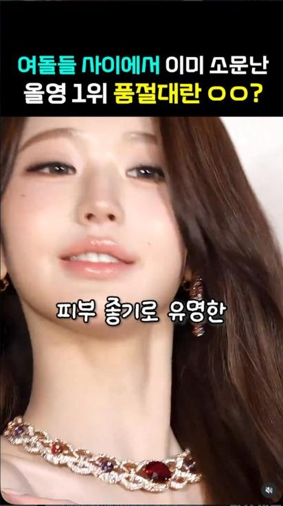
<span class="tag">화면만</span>
</div>
<figcaption>
<div class="cardtop"><span class="viewsbig">좋아요 404</span></div>
<h4>@luna.djing · 6일전(~2026-09-26 추정)</h4>
<p class="caption">여돌들 사이에서 이미 소문난 올영 1위 품절대란 ㅇㅇ? 피부 좋기로 유명한 ...</p>
<p class="composition">여성 아이돌 클립(소유 추정) 재편집 + 자막 + 올영 품절 소구 해시태그</p>
<div class="chipgrid"><span class="chip sm">#뷰티</span> <span class="chip sm">#꿀팁</span> <span class="chip sm">#소유세럼</span> <span class="chip sm">#올리브영</span> <span class="chip sm">#올영</span> <span class="chip sm">#올영세일</span> <span class="chip sm">#올영추천</span> <span class="chip sm">#아이돌</span></div>
</figcaption>
</figure>
<figure class="card" data-post-id="ad-DdsWQjGhlUW">
<div class="frame novideo">
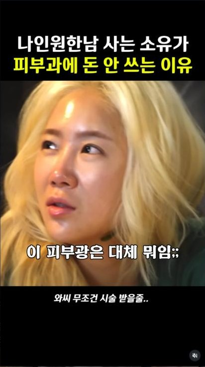
<span class="tag">화면만</span>
</div>
<figcaption>
<div class="cardtop"><span class="viewsbig">좋아요 279</span></div>
<h4>@luna.humor · 7일전(~2026-09-25)</h4>
<p class="caption">나인원한남 사는 소유가 피부과에 돈 안쓰는 이유. 돈 개많은 연예인들도 올영템 쓰는거 싱기...</p>
<p class="composition">여성 인물 피부 클로즈업 자막형 릴</p>
<div class="chipgrid"><span class="chip sm">#뷰티</span> <span class="chip sm">#꿀팁</span> <span class="chip sm">#소유세럼</span> <span class="chip sm">#올리브영</span> <span class="chip sm">#올영</span> <span class="chip sm">#올영세일</span> <span class="chip sm">#올영추천</span> <span class="chip sm">#아이돌</span></div>
</figcaption>
</figure>
<figure class="card" data-post-id="ad-Dd8gqYHz9k_">
<div class="frame novideo">
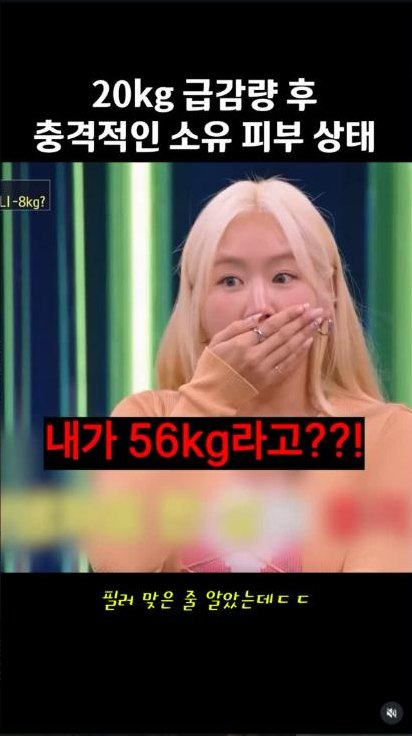
<span class="tag">화면만</span>
</div>
<figcaption>
<div class="cardtop"><span class="viewsbig">좋아요 317</span></div>
<h4>@hana.humor · 20시간전</h4>
<p class="caption">20kg 급감량 후 충격적인 소유 피부 상태. 내가 56kg라고??! ...</p>
<p class="composition">다이어트 전후 소유 클립 재편집 자막형, Instagram 'AI 콘텐츠' 라벨 부착</p>
<div class="chipgrid"><span class="chip sm">#뷰티</span> <span class="chip sm">#아이돌</span> <span class="chip sm">#꿀팁</span> <span class="chip sm">#올리브영</span> <span class="chip sm">#올영</span> <span class="chip sm">#올영추천</span></div>
</figcaption>
</figure>
<figure class="card" data-post-id="ad-Ddv1x3lTMJL">
<div class="frame novideo">
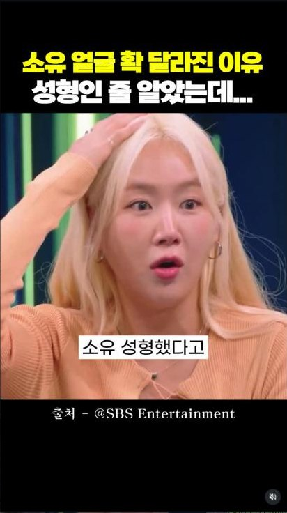
<span class="tag">화면만</span>
</div>
<figcaption>
<div class="cardtop"><span class="viewsbig">좋아요 97</span></div>
<h4>@hana.tving · 5일전</h4>
<p class="caption">소유 얼굴 확 달라진 이유, 성형인 줄 알았는데... 소유 성형했다고. 출처-@SBS Entertainment</p>
<p class="composition">SBS 예능 클립 재편집 + 소유세럼 해시태그 결합</p>
<div class="chipgrid"><span class="chip sm">#뷰티</span> <span class="chip sm">#꿀팁</span> <span class="chip sm">#소유세럼</span> <span class="chip sm">#올리브영</span> <span class="chip sm">#올영</span> <span class="chip sm">#올영세일</span> <span class="chip sm">#올영추천</span> <span class="chip sm">#아이돌</span></div>
</figcaption>
</figure>
<figure class="card" data-post-id="ad-DdvI00FzR9B">
<div class="frame novideo">
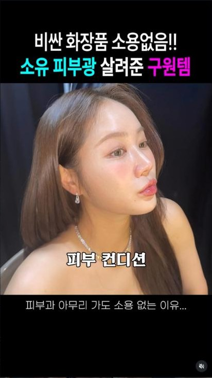
<span class="tag">화면만</span>
</div>
<figcaption>
<div class="cardtop"><span class="viewsbig">좋아요 429</span></div>
<h4>@showing_box · 6일전</h4>
<p class="caption">비싼 화장품 소용없음!! 소유 피부광 살려준 구원템. 피부 컨디션.</p>
<p class="composition">여성 인물 클로즈업 자막형 릴+댓글에 제품명 특정(검색 유도)</p>
<div class="chipgrid"><span class="chip sm">#뷰티</span> <span class="chip sm">#꿀팁</span> <span class="chip sm">#동안</span> <span class="chip sm">#올리브영</span> <span class="chip sm">#올영</span> <span class="chip sm">#올영세일</span> <span class="chip sm">#올영추천</span> <span class="chip sm">#아이돌</span></div>
</figcaption>
</figure>
<figure class="card" data-post-id="ad-DdtGG5wJPun">
<div class="frame novideo">
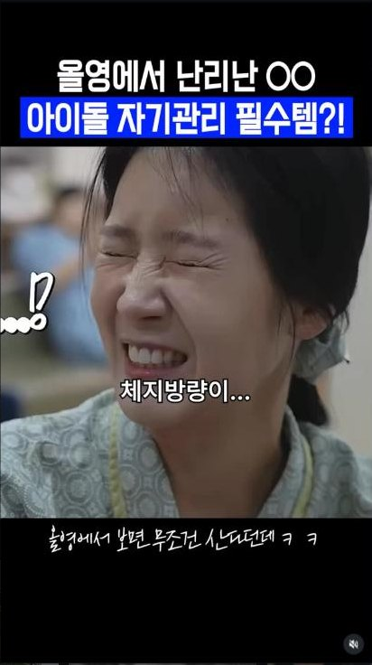
<span class="tag">화면만</span>
</div>
<figcaption>
<div class="cardtop"><span class="viewsbig">좋아요 424</span></div>
<h4>@tving_box · 6일전</h4>
<p class="caption">올영에서 난리난 OO 아이돌 자기관리 필수템?!</p>
<p class="composition">드라마 클립 재편집+자막, 계정 'AI 콘텐츠' 라벨</p>
<div class="chipgrid"><span class="chip sm">#뷰티</span> <span class="chip sm">#꿀팁</span> <span class="chip sm">#소유세럼</span> <span class="chip sm">#올리브영</span> <span class="chip sm">#올영</span> <span class="chip sm">#올영세일</span> <span class="chip sm">#올영추천</span> <span class="chip sm">#아이돌</span></div>
</figcaption>
</figure>
</div>
<div class="extrabox">
<h4 class="extrahead">추가로 확인된 배포 계정 8개</h4>
<ul class="extralist">
<li><span class="exacct">@bibimbap__zip</span><span class="exdate">5일전</span><span class="exline">소유처럼 살 빼고 싶다면 절대 빼먹지 말아야하는 것? 소유 파우치템으로 유명한 이유.</span></li><li><span class="exacct">@green_fun_diary</span><span class="exdate">3일전</span><span class="exline">소유 쌩얼 무슨 일:: 여돌들이 다 쓴다는 그 OO. 이거 아이돌 내돈내산템으로 유명해서 사고싶었는데…</span></li><li><span class="exacct">@apple__paper</span><span class="exdate">2026-09-04</span><span class="exline">대박;;; 오늘부터 소유 관리법 손민수간다 소유 세럼은 올영에 시카마누 검색 ㄱㄱ</span></li><li><span class="exacct">@grape__paper</span><span class="exdate">2026-10-01</span><span class="exline">연예인들 중에서도 소유가 피부 진짜 좋기로 유명하다고함..ㄷㄷ 매번 쟁여두는 템이라고 언급해서 궁금했…</span></li><li><span class="exacct">@grape__paper</span><span class="exdate">2026-09-11</span><span class="exline">이게 되네ㄷㄷ 근데 진짜 여태까지 소유 유툽 보고 따라산것중에 실패한템 없음 영상 속 제품은 올리브영…</span></li><li><span class="exacct">@lemon__paper</span><span class="exdate">2026-10-01</span><span class="exline">연예인들 중에서도 소유가 피부 진짜 좋기로 유명하다고함..ㄷㄷ 매번 쟁여두는 템이라고 언급해서 궁금했…</span></li><li><span class="exacct">@lemon__paper</span><span class="exdate">2026-08-30</span><span class="exline">대박;;; 오늘부터 소유 관리법 손민수간다</span></li><li><span class="exacct">@mango__paper</span><span class="exdate">2026-09-04</span><span class="exline">소유가 진짜 자기관리 겁나 빡세게 하던데 의외로 가성비템 많이 써서 나같은 일반인이 따라사기 좋음ㅋ…</span></li>
</ul>
</div>
<div class="campnote flat"><p>표본에서 가장 큰 캠페인이에요. 같은 소유 클립을 캡션만 바꿔 19개 계정에 뿌렸고, 10월 1일 grape__paper·lemon__paper 두 건은 캡션이 글자 하나까지 같아요. 제품 이름은 8~9월에 시카마누, 9월 말부터 파넬세럼으로 바뀌어요.</p></div>
</div>
<div class="campblock" id="camp-b">
<div class="campheadrow"><span class="chip">캠페인 B</span><h3>이경실 · 관절 영양제 (솔티스)</h3></div>
<p class="meta">게시물 5건 · 노출 계정 5개 · 9월 8일~11일 · 건강식품 · 소재 출처: 본인 유튜브 클립</p>
<div class="cardgrid">
<figure class="card" data-post-id="ad-DdDWTkGx19e">
<div class="frame" data-sc="DdDWTkGx19e">
<video class="hookvid" autoplay muted loop playsinline poster="assets/poster/DdDWTkGx19e.jpg" src="assets/hook/DdDWTkGx19e.mp4"></video>
<span class="tag">릴 보기</span>
</div>
<div class="btnrow">
<button type="button" class="fullbtn" data-hook="assets/hook/DdDWTkGx19e.mp4" data-full="assets/full/DdDWTkGx19e.mp4">전체 재생 ▶</button>
<button type="button" class="pausebtn" disabled>일시정지</button>
</div>
<figcaption>
<div class="cardtop"><span class="viewsbig">조회수 1.8만</span></div>
<h4>@orange__funny · 2026-09-09</h4>
<p class="caption">이경실이 조깅 전 꼭 챙겨먹는다고</p>
<p class="composition">이경실 본인 출연 유튜브 클립 재게시 → 조깅 전 챙겨먹는 관절 영양제 언급 → 제품명은 비공개</p>
<div class="chipgrid"><span class="chip sm">#이경실#관절연골#무릎</span></div>
</figcaption>
</figure>
<figure class="card" data-post-id="ad-DdJEK22qGKg">
<div class="frame" data-sc="DdJEK22qGKg">
<video class="hookvid" autoplay muted loop playsinline poster="assets/poster/DdJEK22qGKg.jpg" src="assets/hook/DdJEK22qGKg.mp4"></video>
<span class="tag">릴 보기</span>
</div>
<div class="btnrow">
<button type="button" class="fullbtn" data-hook="assets/hook/DdJEK22qGKg.mp4" data-full="assets/full/DdJEK22qGKg.mp4">전체 재생 ▶</button>
<button type="button" class="pausebtn" disabled>일시정지</button>
</div>
<figcaption>
<div class="cardtop"><span class="viewsbig">조회수 6.8만(추정, 인접타일값)</span></div>
<h4>@malangping_zzal · 2026-09-11</h4>
<p class="caption">파스랑은 진짜 차원이 다름;;;</p>
<p class="composition">이경실 관절 통증 개선 클립 재게시 → 파스 대비 효과 강조 → 실구매 댓글 유도</p>
<div class="chipgrid"><span class="chip sm">#이경실</span> <span class="chip sm">#관절연골</span> <span class="chip sm">#건강관리</span></div>
</figcaption>
</figure>
<figure class="card" data-post-id="ad-DdDWk3WhaAs">
<div class="frame" data-sc="DdDWk3WhaAs">
<video class="hookvid" autoplay muted loop playsinline poster="assets/poster/DdDWk3WhaAs.jpg" src="assets/hook/DdDWk3WhaAs.mp4"></video>
<span class="tag">릴 보기</span>
</div>
<div class="btnrow">
<button type="button" class="fullbtn" data-hook="assets/hook/DdDWk3WhaAs.mp4" data-full="assets/full/DdDWk3WhaAs.mp4">전체 재생 ▶</button>
<button type="button" class="pausebtn" disabled>일시정지</button>
</div>
<figcaption>
<div class="cardtop"><span class="viewsbig">좋아요 94</span></div>
<h4>@melon__paper · 2026-09-09</h4>
<p class="caption">요즘은 관절엔 콘드로이친보단 이게 더 유명함</p>
<p class="composition">이경실 출연 클립 재게시 → 기존 성분(콘드로이친) 대비 우위 주장 → 제품명 비공개</p>
<div class="chipgrid"><span class="chip sm">#이경실</span> <span class="chip sm">#관절연골</span> <span class="chip sm">#무릎</span></div>
</figcaption>
</figure>
</div>
<div class="extrabox">
<h4 class="extrahead">추가로 확인된 배포 계정 2개</h4>
<ul class="extralist">
<li><span class="exacct">@peach__paper</span><span class="exdate">2026-09-08</span><span class="exline">이경실도 챙긴다는 관절 영양제 진짜 제대로 깎아옴</span></li><li><span class="exacct">@lemon__paper</span><span class="exdate">2026-09-11</span><span class="exline">무릎관절 아작나기 전에 먼저 ㄱㄱ</span></li>
</ul>
</div>
<div class="campnote flat"><p>다섯 건 가운데 네 건은 제품을 "이것"으로만 부르고 브랜드를 가려요. peach__paper 한 건에서만 제품 박스에 솔티스 로고가 그대로 보여요. 표본 전체에서 브랜드가 화면에 드러난 유일한 건이에요.</p></div>
</div>
<div class="campblock" id="camp-c">
<div class="campheadrow"><span class="chip">캠페인 C</span><h3>카디비 · 킴 카다시안 · 나는솔로 영수 · 세르프 리프팅</h3></div>
<p class="meta">게시물 5건 · 노출 계정 5개 · 9월 8일~30일 · 뷰티 · 소재 출처: 해외 인터뷰·예능 클립을 리프팅 맥락으로 재편집</p>
<div class="cardgrid">
<figure class="card" data-post-id="ad-DdYRxqVvAG3">
<div class="frame" data-sc="DdYRxqVvAG3">
<video class="hookvid" autoplay muted loop playsinline poster="assets/poster/DdYRxqVvAG3.jpg" src="assets/hook/DdYRxqVvAG3.mp4"></video>
<span class="tag">릴 보기</span>
</div>
<div class="btnrow">
<button type="button" class="fullbtn" data-hook="assets/hook/DdYRxqVvAG3.mp4" data-full="assets/full/DdYRxqVvAG3.mp4">전체 재생 ▶</button>
<button type="button" class="pausebtn" disabled>일시정지</button>
</div>
<figcaption>
<div class="cardtop"><span class="viewsbig">조회수 7만</span></div>
<h4>@blue_fun_diary · 2026-09-17</h4>
<p class="caption">빌보드 1위 카디비 피부비결은 K-리프팅?!</p>
<p class="composition">카디비의 무관한 인터뷰 클립을 재편집 → "피부비결은 K리프팅" 자막으로 연결 → 세르프 브랜드 해시태그 삽입</p>
<div class="chipgrid"><span class="chip sm">#세르프</span> <span class="chip sm">#세르프효과</span> <span class="chip sm">#K리프팅</span> <span class="chip sm">#카디비</span> <span class="chip sm">#통증없는리프팅</span></div>
</figcaption>
</figure>
<figure class="card" data-post-id="ad-DddlmyWpEZX">
<div class="frame novideo">
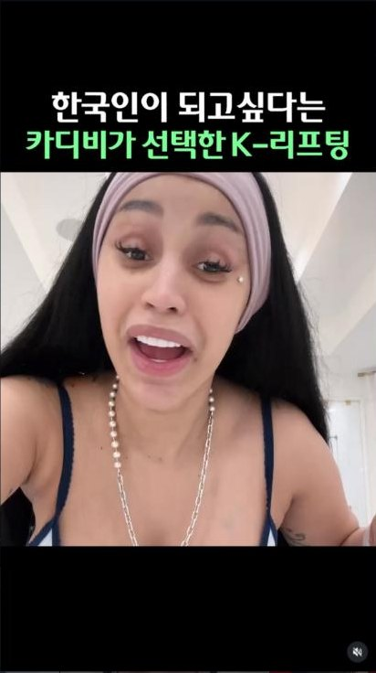
<span class="tag">화면만</span>
</div>
<figcaption>
<div class="cardtop"><span class="viewsbig">좋아요 263</span></div>
<h4>@chachaping_zzal · 9월19일</h4>
<p class="caption">한국인이 되고 싶다는 카디비가 선택한 K-리프팅.</p>
<p class="composition">해외 셀럽 본인 추정 영상 클립 + 브랜드 해시태그 결합</p>
<div class="chipgrid"><span class="chip sm">#세르프</span> <span class="chip sm">#세르프효과</span> <span class="chip sm">#K리프팅</span> <span class="chip sm">#카디비</span> <span class="chip sm">#통증없는리프팅</span></div>
</figcaption>
</figure>
<figure class="card" data-post-id="ad-Dd0l-fdzTsB">
<div class="frame novideo">
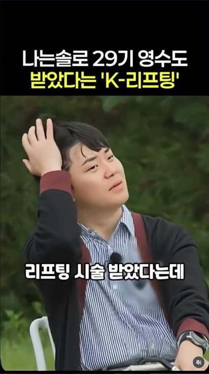
<span class="tag">화면만</span>
</div>
<figcaption>
<div class="cardtop"><span class="viewsbig">좋아요 376</span></div>
<h4>@hana.humor · 3일전</h4>
<p class="caption">나는솔로 29기 영수도 받았다는 'K-리프팅'.</p>
<p class="composition">예능 출연자 얼굴 클로즈업 + 리프팅 시술 받았다는 자막 + 브랜드 해시태그</p>
<div class="chipgrid"><span class="chip sm">#나는솔로</span> <span class="chip sm">#29기영수</span> <span class="chip sm">#나솔</span> <span class="chip sm">#영수근황</span> <span class="chip sm">#세르프</span> <span class="chip sm">#세르프효과</span></div>
</figcaption>
</figure>
</div>
<div class="extrabox">
<h4 class="extrahead">추가로 확인된 배포 계정 2개</h4>
<ul class="extralist">
<li><span class="exacct">@ddonutping_zzal</span><span class="exdate">2일전</span><span class="exline">헤어지고 관리 받더니 확 달라진 나솔 29기 영수.</span></li><li><span class="exacct">@yellow_fun_diary</span><span class="exdate">2026-09-08</span><span class="exline">해외 스타들 사랑받고 엘르 어워드 1등 먹은 세르프</span></li>
</ul>
</div>
<div class="campnote flat"><p>한 브랜드가 인물 셋을 동시에 씁니다. 카디비·킴 카다시안은 리프팅과 상관없는 해외 클립을 가져와 자막으로 엮고, 나는솔로 영수는 예능 근황 톤으로 붙여요. 다른 캠페인과 달리 브랜드명을 해시태그에 그대로 적어요.</p></div>
</div>
<div class="campblock" id="camp-d">
<div class="campheadrow"><span class="chip">캠페인 D</span><h3>조혜련 · 다이어트 보조제</h3></div>
<p class="meta">게시물 2건 · 노출 계정 2개 · 9월 16일 · 건강식품 · 소재 출처: 본인 출연 클립</p>
<div class="cardgrid">
<figure class="card" data-post-id="ad-DdWHsAkuDs0">
<div class="frame" data-sc="DdWHsAkuDs0">
<video class="hookvid" autoplay muted loop playsinline poster="assets/poster/DdWHsAkuDs0.jpg" src="assets/hook/DdWHsAkuDs0.mp4"></video>
<span class="tag">릴 보기</span>
</div>
<div class="btnrow">
<button type="button" class="fullbtn" data-hook="assets/hook/DdWHsAkuDs0.mp4" data-full="assets/full/DdWHsAkuDs0.mp4">전체 재생 ▶</button>
<button type="button" class="pausebtn" disabled>일시정지</button>
</div>
<figcaption>
<div class="cardtop"><span class="viewsbig">조회수 6.8만</span><span class="adbadge">협찬 광고 라벨</span></div>
<h4>@tree.humor · 2026-09-16</h4>
<p class="caption">ㅋㅋㅋㅋㅋ다이어트할때 중요하긴함</p>
<p class="composition">조혜련 본인 출연 클립(출처-조회련:조혜련) → 8kg 감량 비결로 특정 제품 언급 → 다이어트 효과 소구</p>
<div class="chipgrid"><span class="chip sm">#조혜련</span> <span class="chip sm">#다이어트</span> <span class="chip sm">#꿀팁</span> <span class="chip sm">#정보</span></div>
</figcaption>
</figure>
<figure class="card" data-post-id="ad-DdWH9IBQR8g">
<div class="frame novideo">
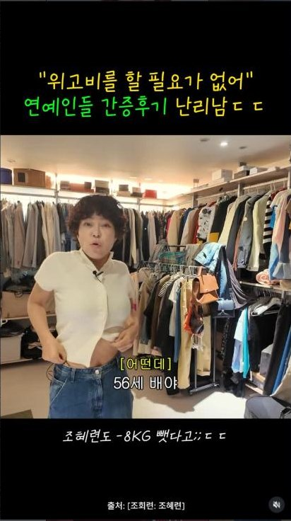
<span class="tag">화면만</span>
</div>
<figcaption>
<div class="cardtop"><span class="viewsbig">좋아요 198</span><span class="adbadge">협찬 광고 라벨</span></div>
<h4>@reply.1989__ · 9월16일</h4>
<p class="caption">위고비를 할 필요가 없어, 연예인들 간증후기 난리남. 56세 배우 조혜련도 -8KG 뺐다고.</p>
<p class="composition">배우 본인 드레스룸에서 직접 체험담 전달하는 릴, 상단 '협찬 광고' 라벨</p>
<div class="chipgrid"><span class="chip sm">#조혜련</span> <span class="chip sm">#다이어트</span> <span class="chip sm">#꿀팁</span> <span class="chip sm">#정보</span></div>
</figcaption>
</figure>
<div class="campnote" style="grid-column:span 2"><p>42건 가운데 계정에 "협찬 광고" 표시가 붙은 건은 이 두 건뿐이에요. 나머지 40건은 전부 라벨 없이 리포스트 밈처럼 올라갔어요. 같은 소재라도 라벨을 다는 계정과 안 다는 계정이 갈린다는 뜻이에요.</p></div>
</div>
</div>
<div class="campblock" id="camp-e">
<div class="campheadrow"><span class="chip">캠페인 E</span><h3>한선화 · 박가을 · 미백 패치 (브랜드 가림)</h3></div>
<p class="meta">게시물 2건 · 노출 계정 2개 · 9월 4일 · 뷰티 · 소재 출처: 스트리머 방송 화면 캡처</p>

<div class="extrabox">
<h4 class="extrahead">추가로 확인된 배포 계정 2개</h4>
<ul class="extralist">
<li><span class="exacct">@apple__paper</span><span class="exdate">2026-09-04</span><span class="exline">피부과 끊을 정도면 얼마나 좋은거야ㅋㅋㅋ</span></li><li><span class="exacct">@peach__paper</span><span class="exdate">2026-09-04</span><span class="exline">진짜 신박한데 효과는 확실한듯</span></li>
</ul>
</div>
<div class="campnote flat"><p>두 건이 같은 날 같은 소재로 올라갔어요. 글루타치온 주사 가격을 먼저 말하고 패치를 대안으로 놓는 구성이에요. 댓글에는 떼어낼 때 자국이 남는지 묻는 실구매 문의가 달려 있어요.</p></div>
</div>
<div class="campblock" id="camp-f">
<div class="campheadrow"><span class="chip">캠페인 F</span><h3>이경실 · 눈건강 영양제 (브랜드 가림)</h3></div>
<p class="meta">게시물 2건 · 노출 계정 2개 · 8월 31일~9월 10일 · 건강식품 · 소재 출처: 본인 출연 클립</p>

<div class="extrabox">
<h4 class="extrahead">추가로 확인된 배포 계정 2개</h4>
<ul class="extralist">
<li><span class="exacct">@apple__paper</span><span class="exdate">2026-08-31</span><span class="exline">이게 요새 루테인 다음 뜨는 거인듯</span></li><li><span class="exacct">@grape__paper</span><span class="exdate">2026-09-10</span><span class="exline">품절될까봐 이경실도 박스째 쟁인다고</span></li>
</ul>
</div>
<div class="campnote flat"><p>같은 인물로 관절·눈·간까지 축을 갈아 끼웁니다. 자막은 "루테X 대신 먹는다는 이것"처럼 경쟁 성분을 먼저 깎고 제품은 가려요.</p></div>
</div>
<div class="campblock" id="camp-g">
<div class="campheadrow"><span class="chip">캠페인 G</span><h3>이경실 · 간 · 숙취 영양제 (브랜드 가림)</h3></div>
<p class="meta">게시물 1건 · 노출 계정 1개 · 8월 31일 · 건강식품 · 소재 출처: 본인 출연 클립</p>

<div class="extrabox">
<h4 class="extrahead">추가로 확인된 배포 계정 1개</h4>
<ul class="extralist">
<li><span class="exacct">@mango__paper</span><span class="exdate">2026-08-31</span><span class="exline">이경실 반응 진짜 찐텐인듯 ㅋㅋㅋㅋ</span></li>
</ul>
</div>
</div>
<div class="campblock" id="camp-h">
<div class="campheadrow"><span class="chip">캠페인 H</span><h3>박원숙 · 약국 혈관 영양제 (브랜드 가림)</h3></div>
<p class="meta">게시물 1건 · 노출 계정 1개 · 9월 14일 · 건강식품 · 소재 출처: 본인 출연 클립</p>
<div class="cardgrid">
<figure class="card" data-post-id="ad-DdQDuC6hQj7">
<div class="frame novideo">
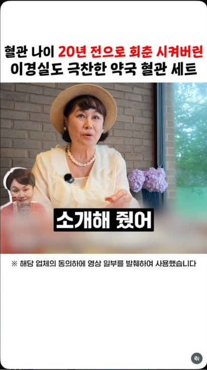
<span class="tag">화면만</span>
</div>
<figcaption>
<div class="cardtop"><span class="viewsbig">좋아요 103</span></div>
<h4>@nato.iove · 9월14일</h4>
<p class="caption">혈관 나이 20년 전으로 회춘 시켜버린 이경실도 극찬한 약국 혈관 세트. 연예인들은 다 챙기는 혈관 영양제라고</p>
<p class="composition">배우가 직접 소개하는 형식의 릴, 영상 내 \"해당 업체의 동의하에 발췌 사용\" 고지 삽입</p>
<div class="chipgrid"><span class="chip sm">#박원숙</span> <span class="chip sm">#연예인추천템</span> <span class="chip sm">#자기관리</span></div>
</figcaption>
</figure>
<div class="campnote" style="grid-column:span 3"><p>영상 안에 "해당 업체의 동의하에 영상 일부를 발췌하여 사용했습니다"라는 고지가 들어가 있어요. 광고 라벨 대신 쓰는 표기로, 캠페인 B의 lemon__paper 건에도 같은 문장이 들어 있어요.</p></div>
</div>
</div>
<div class="campblock" id="camp-i">
<div class="campheadrow"><span class="chip">캠페인 I</span><h3>이혜정 · 프리미엄 오메가3</h3></div>
<p class="meta">게시물 1건 · 노출 계정 1개 · 9월 29일 · 건강식품 · 소재 출처: 본인 주방에서 직접 추천</p>
<div class="cardgrid">
<figure class="card" data-post-id="ad-Dd2vPz8z4KX">
<div class="frame novideo">
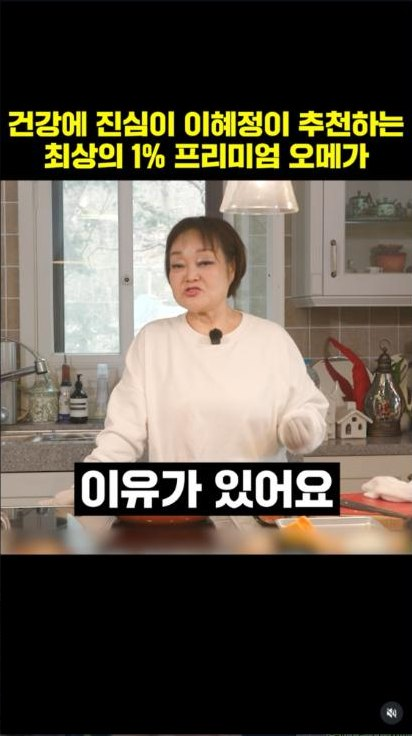
<span class="tag">화면만</span>
</div>
<figcaption>
<div class="cardtop"><span class="viewsbig">좋아요 91</span></div>
<h4>@hana.tving · 3일전</h4>
<p class="caption">건강에 진심인 이혜정이 추천하는 최상의 1% 프리미엄 오메가.</p>
<p class="composition">본인 주방에서 직접 추천 멘트하는 릴</p>
<div class="chipgrid"><span class="chip sm">#오메가3</span> <span class="chip sm">#빅마마이혜정</span> <span class="chip sm">#영양제추천</span></div>
</figcaption>
</figure>
</div>
</div>
<h3 class="steplabel">릴이 아닌 유일한 2건 · 캐러셀</h3>
<p class="lede tight">42건 가운데 40건이 릴이에요. 남은 2건만 사진을 넘기는 캐러셀이고, 둘 다 가십 훅 없이 브랜드가 앞에 나섭니다.</p>
<div class="campblock" id="camp-j">
<div class="campheadrow"><span class="chip">캠페인 J</span><h3>제나 · 한스킨 PDRN 핑크볼 광채세럼</h3><span class="fmtbadge big">캐러셀 · 사진 9장</span></div>
<p class="meta">게시물 1건 · 노출 계정 1개 · 9월 23일 · 뷰티 · 소재 출처: 촬영 비하인드 멘트 + 제품 클로즈업</p>
<div class="cardgrid">
<figure class="card" data-post-id="ad-DdnmffEHz6d">
<div class="frame novideo wide">
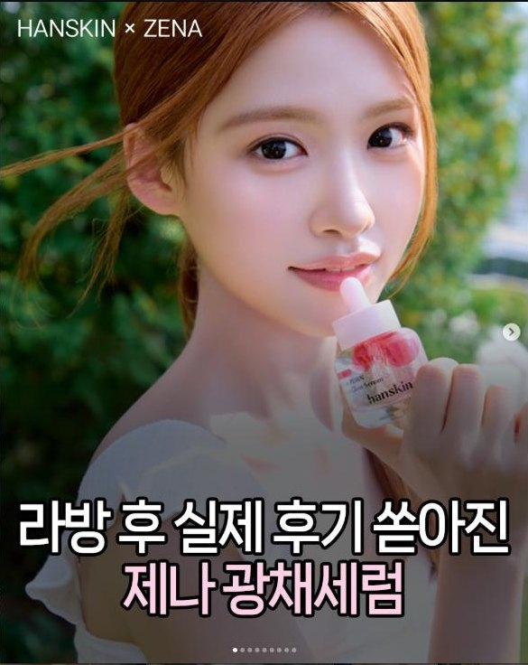
<span class="tag">화면만</span>
</div>
<figcaption>
<div class="cardtop"><span class="viewsbig">좋아요 349</span><span class="fmtbadge">캐러셀</span></div>
<h4>@luna.humor · 9월23일</h4>
<p class="caption">촬영 때 처음 만난 세럼이 촬영 끝난 뒤에도 계속 쓰고 있다는 제나 ... 일명 제나세럼인 PDRN 핑크볼 광채세럼 ... 라…</p>
<p class="composition">브랜드명×인물명 오버레이 인트로 + 촬영 비하인드 멘트 + 제품 클로즈업 캐러셀</p>
<div class="chipgrid"><span class="chip sm">#피부</span> <span class="chip sm">#PDRN</span> <span class="chip sm">#제나세럼</span> <span class="chip sm">#핑크볼광채세럼</span> <span class="chip sm">#연꽃PDRN</span></div>
</figcaption>
</figure>
<div class="campnote" style="grid-column:span 3"><p>릴 40건과 포맷이 완전히 달라요. 계정 이름 대신 "HANSKIN × ZENA" 브랜드 오버레이로 시작하고, 사진 9장을 넘기며 제품을 보여줘요. 가십 훅도 가린 결과도 없고, 구매처로 무신사뷰티 세일을 지목해요.</p></div>
</div>
</div>
<div class="campblock" id="camp-k">
<div class="campheadrow"><span class="chip">캠페인 K</span><h3>이민정 · CLNL 바디 와입</h3><span class="fmtbadge big">캐러셀 · 사진 8장</span></div>
<p class="meta">게시물 1건 · 노출 계정 1개 · 9월 17일 · 생활용품 · 소재 출처: 왓츠인마이백 포맷</p>
<div class="cardgrid">
<figure class="card" data-post-id="ad-DdYZL1Cn3kc">
<div class="frame novideo wide">
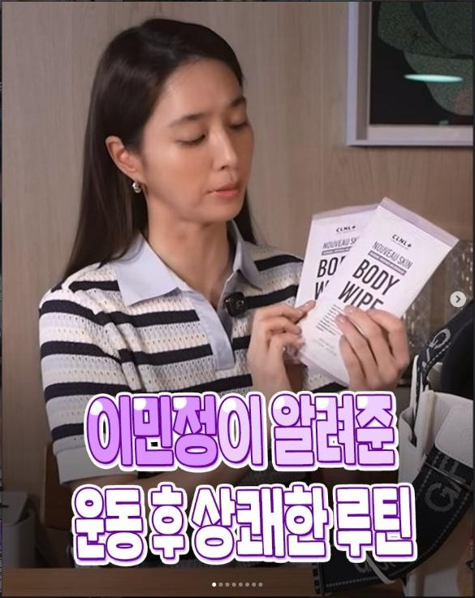
<span class="tag">화면만</span>
</div>
<figcaption>
<div class="cardtop"><span class="viewsbig">좋아요 231</span><span class="fmtbadge">캐러셀</span></div>
<h4>@luna.besty · 9월17일</h4>
<p class="caption">이민정이 알려준 운동 후 상쾌한 루틴. 어쩐지 땀냄새도 안날거 같더라</p>
<p class="composition">배우가 직접 제품 박스 들고 소개하는 왓츠인마이백 포맷 캐러셀</p>
<div class="chipgrid"><span class="chip sm">#이민정</span> <span class="chip sm">#왓츠인마이백</span> <span class="chip sm">#CLNL</span> <span class="chip sm">#씨엘엔엘</span> <span class="chip sm">#골프템</span></div>
</figcaption>
</figure>
<div class="campnote" style="grid-column:span 3"><p>배우가 제품 박스를 직접 들고 소개해요. 골프·운동 루틴에 얹는 구성이라 가십 훅이 필요 없어요. 표본에서 뷰티·건강식품이 아닌 카테고리는 이 한 건뿐이에요.</p></div>
</div>
</div>
<div class="extrabox span">
<h4 class="extrahead">연예인이 안 나와서 42건에서 뺀 광고</h4>
<ul class="extralist">
<li><span class="exacct">@luna.humor</span><span class="exline">크록스 팝업스토어 캐러셀 — 계정 캡션에 "#광고"를 직접 붙인 유일한 건인데, 연예인이 안 나와요.</span></li>
<li><span class="exacct">@video.1989__</span><span class="exline">멜라닌 크림 캐러셀 — 브랜드가 단독으로 나오고 판매 수치를 앞세워요. 연예인이 없어요.</span></li>
<li><span class="exacct">@hana.zzal · chachaping_zzal</span><span class="exline">디톡스 주스 릴 2건 — 출연자가 다이어트 유튜버라 배우·아이돌·방송인 기준에 안 들어가요.</span></li>
</ul>
</div>
</section>
<section id="cost" class="band" aria-labelledby="cost-h">
<div class="sechead">
<h2 id="cost-h">단가와 성과</h2>
<p class="lede">계정 단가는 10만원에서 40만원 사이, 조회수로 나누면 전부 3~4원대로 모여요.</p>
</div>
<div class="costgrid">
<div class="tablewrap">
<table class="camptable pricetable">
<thead><tr><th>계정</th><th>단가</th><th>조회수</th><th>뷰당</th></tr></thead>
<tbody><tr><td>luna.player</td><td>400,000원</td><td>131,000</td><td class="cpv">3.1원</td></tr>
<tr><td>one_star_video</td><td>400,000원</td><td>122,000</td><td class="cpv">3.3원</td></tr>
<tr><td>dotori_channel</td><td>400,000원</td><td>127,000</td><td class="cpv">3.1원</td></tr>
<tr><td>good_tip_magazine</td><td>250,000원</td><td>77,000</td><td class="cpv">3.2원</td></tr>
<tr><td>comedy.1989__</td><td>250,000원</td><td>74,000</td><td class="cpv">3.4원</td></tr>
<tr><td>blue_fun_diary (카디비)</td><td>250,000원</td><td>70,000</td><td class="cpv">3.6원</td></tr>
<tr><td>tree.humor (조혜련)</td><td>250,000원</td><td>68,000</td><td class="cpv">3.7원</td></tr>
<tr><td>malangping_zzal (이경실)</td><td>250,000원</td><td>68,000</td><td class="cpv">3.7원</td></tr>
<tr><td>orange__funny (이경실)</td><td>100,000원</td><td>18,000</td><td class="cpv">5.6원</td></tr>
<tr class="outlier"><td>peach__paper (한선화 · 박가을)</td><td>100,000원</td><td>1,456,678</td><td class="cpv unk">재확인</td></tr></tbody>
</table>
</div>
<div class="calloutcol">
<p class="callout">단가는 56개 계정 전부 확인했어요. 10만원에서 40만원 사이고, 팔로워가 많은 계정이 그대로 비싸요. 뷰당을 계산할 수 있는 건 게시물 조회수가 화면에 뜬 9개 계정뿐이에요. 나머지 21개는 조회수가 안 떠서 빠졌어요.</p>
<p class="callout">peach__paper 미백 패치 건에 적힌 조회수 145만은 다른 건들과 20배 이상 벌어져요. 그 숫자가 이 게시물 것인지 가져온 원본 영상 것인지 다시 봐야 해서 뷰당 계산에서 뺐어요.</p>
<p class="callout">우리 시딩 기준 10원의 3분의 1 수준이지만, 밈 페이지 구매 의도는 시딩 릴보다 낮게 봐야 해요. 댓글은 3~5개 수준이고 "다들 피피엘이네" 같은 반응도 나와요.</p>
<p class="callout">조회수는 그 계정이 평소에 받던 수준과 비슷해요. 연예인이 조회수를 끌어올리는 게 아니라, 계정이 원래 가진 도달을 그대로 사고 광고 티만 지우는 포장에 가까워요.</p>
<p class="callout">실제 구매로 이어진 흔적도 있어요. malangping_zzal 댓글에 "이경실씨보고 구매했어요", peach__paper 미백 패치 댓글에는 떼어낼 때 자국이 남는지 묻는 문의가 달렸어요.</p>
</div>
</div>
<h3 class="steplabel">같은 표본 안에서 연예인 광고를 안 받는 계정 26개</h3>
<p class="lede tight">이 가운데 hana.zzal과 video.1989__ 두 계정은 광고를 받긴 받아요. 다이어트 유튜버 영상과 브랜드 단독 캐러셀이라 연예인 광고에서 뺐어요.</p>
<div class="chipgrid wide"><span class="chip sm">luna.tip</span><span class="chip sm">luna.playlist__</span><span class="chip sm">luna.daily__</span><span class="chip sm">nato.tving</span><span class="chip sm">nato.humor</span><span class="chip sm">nato.healing</span><span class="chip sm">nato.zzal</span><span class="chip sm">nato.funny</span><span class="chip sm">nato.tip</span><span class="chip sm">nato.pick</span><span class="chip sm">hana.zzal</span><span class="chip sm">tree.zzal</span><span class="chip sm">tree.tving</span><span class="chip sm">tree.playlist</span><span class="chip sm">easy.playlist</span><span class="chip sm">on_ggul_tip</span><span class="chip sm">jolly__humor</span><span class="chip sm">8282__humor</span><span class="chip sm">video.1989__</span><span class="chip sm">dding_box</span><span class="chip sm">tteokbokki__zip</span><span class="chip sm">hachuping_humor</span><span class="chip sm">shashaping_humor</span><span class="chip sm">posilping_humor</span><span class="chip sm">purple_fun_diary</span><span class="chip sm">pink_fun_diary</span></div>
</section>
<section id="apply" class="band soft" aria-labelledby="apply-h">
<div class="sechead">
<h2 id="apply-h">김가연으로 간다</h2>
<p class="lede">이 포맷을 그대로 김가연 기미 서사에 얹어요. 자막 13안, 계정 세트와 예산, 운영자 캡션 4종까지 바로 쓰는 형태로 정리했어요.</p>
</div>
<nav class="jumplist" aria-label="김가연 적용 바로가기">
<a href="#apply-subs"><b>1</b>자막 13안</a>
<a href="#apply-accounts"><b>2</b>광고 확인 계정 30개</a>
<a href="#apply-budget"><b>3</b>계정 세트와 예산</a>
<a href="#apply-captions"><b>4</b>운영자 캡션 4종</a>
</nav>

<div class="formula" id="apply-subs">
<div class="formula-core">
<h3 class="formula-title">같은 세 칸에 김가연을 넣어요</h3>
<p class="formula-line">
<span class="s-mod">권위 · 변화 수식어</span><span class="plus">+</span><span class="s-name">김가연</span><span class="plus">+</span><span class="s-res">가려진 결과</span>
</p>
<p class="formula-note">본인이 직접 한 말에서 수식어를 뽑아요. "기미는 레이저 하면 더 번진다", 딸이랑 같이 쓴다, 헤라 모델 출신, 면봉으로 발라 보이는 장면이 전부 수식어 칸 재료예요. 마지막 칸은 원본과 똑같이 비결 · 이유 · 이것 · 그 OO로 가리고, 제품 이름은 한 건도 쓰지 않아요.</p>
<ul class="subs">
<li class="subrow">
<span class="subacct">원본 @melon__paper</span>
<span class="subline"><span class="s-mod">레이저 한 번 안 한</span> <span class="s-name">김가연</span> <span class="s-res">'기미는 이것만 쓴다'</span></span>
</li>
<li class="subrow">
<span class="subacct">원본 @good_tip_magazine</span>
<span class="subline"><span class="s-name">김가연</span> <span class="s-mod">55세 쌩얼 무슨 일;;</span> <span class="s-res">엄마들이 다 쓴다는 그 OO</span></span>
</li>
<li class="subrow">
<span class="subacct">원본 @one_star_video</span>
<span class="subline"><span class="s-mod">"기미는 레이저 하면 더 번진다"는</span> <span class="s-name">김가연</span> <span class="s-res">그럼 뭘로 지웠냐면ㄷㄷ</span></span>
</li>
<li class="subrow">
<span class="subacct">원본 @happing_box</span>
<span class="subline"><span class="s-name">김가연</span> <span class="s-mod">기미 다 걷힌</span> <span class="s-res">이유</span></span>
</li>
<li class="subrow">
<span class="subacct">원본 @luna.player</span>
<span class="subline"><span class="s-gen">배우들</span> <span class="s-mod">기미 없는 얼굴은</span> <span class="s-res">다 레이저인 줄 알았는데...</span></span>
</li>
<li class="subrow">
<span class="subacct">원본 @comedy.1989__</span>
<span class="subline"><span class="s-gen">50대 여배우</span> <span class="s-mod">동안 피부는</span> <span class="s-res">다 시술인 줄 알았는데...</span></span>
</li>
<li class="subrow">
<span class="subacct">원본 @dotori_channel</span>
<span class="subline"><span class="s-mod">약국에서 품절났다는</span> <span class="s-gen">OO 배우</span> <span class="s-res">기미 관리 필수템?!</span></span>
</li>
<li class="subrow">
<span class="subacct">원본 @tree.humor</span>
<span class="subline"><span class="s-mod">기미 싹 걷고 리즈 찍은</span> <span class="s-name">김가연</span> <span class="s-res">동안 비결 = 면봉?</span></span>
</li>
<li class="subrow">
<span class="subacct">원본 @orange__funny</span>
<span class="subline"><span class="s-mod">바르는 것만큼은 깐깐한</span> <span class="s-name">김가연</span> <span class="s-res">기미에 좋다고 콕 찍은 이것</span></span>
</li>
<li class="subrow">
<span class="subacct">원본 @melon__paper</span>
<span class="subline"><span class="s-name">김가연</span> <span class="s-mod">딸이랑 같이 쓴다는</span> <span class="s-res">'모녀 동안 크림 하나'</span></span>
</li>
<li class="subrow">
<span class="subacct">원본 @malangping_zzal</span>
<span class="subline"><span class="s-mod">커버 화장을 달고 살던</span> <span class="s-name">김가연</span> <span class="s-res">맨얼굴로 다니게 된 이유</span></span>
</li>
<li class="subrow">
<span class="subacct">원본 @blue_fun_diary</span>
<span class="subline"><span class="s-mod">헤라 모델 출신</span> <span class="s-name">김가연</span> <span class="s-res">기미 비결은 약국템?!</span></span>
</li>
<li class="subrow">
<span class="subacct">원본 @hana.zzal</span>
<span class="subline"><span class="s-mod">산후 기미 20년 끌다가?</span> <span class="s-res">'본살이 치즈 구멍처럼 돌아왔다'</span></span>
</li>
</ul>
</div>
</div>

<h3 class="steplabel" id="apply-accounts">광고가 확인된 계정 30개</h3>
<p class="lede tight">56개 계정을 전부 열어 보니 30개가 연예인 광고를 받고 있었어요. 뷰티 캠페인을 실제로 받아 본 계정이라 기미크림을 올려도 거절될 가능성이 낮은 쪽이에요. 가장 큰 소유 세럼 캠페인 하나가 이 가운데 19개를 썼어요.</p>
<div class="chipgrid wide"><span class="chip sm">apple__paper</span><span class="chip sm">bibimbap__zip</span><span class="chip sm">blue_fun_diary</span><span class="chip sm">chachaping_zzal</span><span class="chip sm">comedy.1989__</span><span class="chip sm">ddonutping_zzal</span><span class="chip sm">dotori_channel</span><span class="chip sm">good_tip_magazine</span><span class="chip sm">grape__paper</span><span class="chip sm">green_fun_diary</span><span class="chip sm">hana.humor</span><span class="chip sm">hana.tving</span><span class="chip sm">happing_box</span><span class="chip sm">lemon__paper</span><span class="chip sm">luna.besty</span><span class="chip sm">luna.djing</span><span class="chip sm">luna.humor</span><span class="chip sm">luna.player</span><span class="chip sm">malangping_zzal</span><span class="chip sm">mango__paper</span><span class="chip sm">melon__paper</span><span class="chip sm">nato.iove</span><span class="chip sm">one_star_video</span><span class="chip sm">orange__funny</span><span class="chip sm">peach__paper</span><span class="chip sm">reply.1989__</span><span class="chip sm">showing_box</span><span class="chip sm">tree.humor</span><span class="chip sm">tving_box</span><span class="chip sm">yellow_fun_diary</span></div>

<h3 class="steplabel" id="apply-budget">계정 세트와 예산 · 2주 2차 배포</h3>
<p class="lede tight">캠페인 A가 9월 초와 9월 말 두 차례에 걸쳐 돈 구조를 그대로 가정했어요. 1차에 4계정, 2주 뒤 2차에 3계정이에요.</p>
<div class="fstats">
<div class="fstat"><span class="fnum sm">215만원</span><span class="flab">7계정 2차 배포 총 예산</span></div>
<div class="fstat"><span class="fnum sm">53.1만</span><span class="flab">합산 예상 조회수</span></div>
<div class="fstat"><span class="fnum sm">4.0원</span><span class="flab">조회수 1회당 단가</span></div>
<div class="fstat"><span class="fnum sm">531만원</span><span class="flab">같은 도달을 시딩 10원으로 사면</span></div>
</div>
<div class="costgrid">
<div class="tablewrap">
<table class="camptable pricetable budgettable">
<thead><tr><th>계정</th><th>단가</th><th>예상 조회수</th><th>뷰당</th></tr></thead>
<tbody><tr class="waverow"><th colspan="4" scope="colgroup">1차 · 집행 1주차 · 4개 계정</th></tr>
<tr><td>luna.player</td><td>400,000원</td><td>131,000</td><td class="cpv">3.1원</td></tr>
<tr><td>one_star_video</td><td>400,000원</td><td>122,000</td><td class="cpv">3.3원</td></tr>
<tr><td>dotori_channel</td><td>400,000원</td><td>127,000</td><td class="cpv">3.1원</td></tr>
<tr><td>good_tip_magazine</td><td>250,000원</td><td>77,000</td><td class="cpv">3.2원</td></tr>
<tr class="waverow"><th colspan="4" scope="colgroup">2차 · 집행 3주차 · 3개 계정</th></tr>
<tr><td>comedy.1989__</td><td>250,000원</td><td>74,000</td><td class="cpv">3.4원</td></tr>
<tr><td>happing_box</td><td>350,000원</td><td class="unk">미확인</td><td class="unk">—</td></tr>
<tr><td>melon__paper</td><td>100,000원</td><td class="unk">미확인</td><td class="unk">—</td></tr></tbody>
</table>
</div>
<div class="calloutcol">
<p class="callout">뷰당 4.0원이에요. 우리 시딩 기준 10원으로 같은 53.1만 도달을 사면 531만원이라, 2.5배 차이가 나요.</p>
<p class="callout">7계정 단가는 모두 단가표에서 확인한 값이에요. happing_box 35만원·melon__paper 10만원도 들어가 있어요. 다만 이 두 계정은 게시물 조회수가 안 떠서 분모에서 빠져 있어요. 실제 뷰당 단가는 4.0원보다 낮게 나와요.</p>
<p class="callout">이 표본에서 광고가 확인된 카테고리는 뷰티 29건, 건강식품 12건, 생활용품 1건이에요. 기미크림은 뷰티 쪽과 같은 칸이라 계정 세트를 그대로 가져가도 맞아요.</p>
</div>
</div>

<h3 class="steplabel" id="apply-captions">운영자 1인칭 캡션 4종</h3>
<p class="lede tight">캡션 본문에는 링크를 넣지 않아요. 해시태그와 마지막 한 줄이 CTA고, 구매처는 올영이 아니라 약국과 자사몰 행사예요.</p>
<div class="capgrid">
<div class="capcard">
<div class="capcore">
<span class="chip">레이저 반박</span>
<p class="captext">김가연이 기미는 피부과에서 레이저로 하는 거 아니라고 오히려 번진다고 함..ㄷㄷ 나도 두 번 받고 더 올라와서 접었는데 이 말 듣고 바르는 걸로 갈아탐 3주차에 광대 쪽부터 먼저 흐려지는 중</p>
<p class="capcta">약국에서 기미크림 찾을 때 성분부터 보고 고르기ㄱㄱ</p>
<div class="chipgrid captags"><span class="chip sm">#김가연</span><span class="chip sm">#김가연기미</span><span class="chip sm">#기미크림</span><span class="chip sm">#약국기미크림</span><span class="chip sm">#트라넥삼산</span><span class="chip sm">#기미레이저</span><span class="chip sm">#동안피부</span><span class="chip sm">#40대피부관리</span></div>
</div>
</div>
<div class="capcard">
<div class="capcore">
<span class="chip">모녀 동안</span>
<p class="captext">딸이랑 같은 화장품 쓴다는 말 그냥 하는 소리인 줄 알았는데 김가연은 가족이 다 같이 쓴다고 함ㅋㅋ 엄마 쓰는 걸 딸이 가져가 쓰는 게 더 신기하다 목에도 발라도 된다길래 나도 목까지 같이 발라봄</p>
<p class="capcta">모녀로 같이 쓸 거면 큰 용량으로ㄱㄱ</p>
<div class="chipgrid captags"><span class="chip sm">#김가연</span><span class="chip sm">#모녀동안</span><span class="chip sm">#기미크림</span><span class="chip sm">#약국기미크림</span><span class="chip sm">#동안피부</span><span class="chip sm">#게임부부</span><span class="chip sm">#50대피부</span><span class="chip sm">#목관리</span></div>
</div>
</div>
<div class="capcard">
<div class="capcore">
<span class="chip">약국 품절</span>
<p class="captext">명동 약국 갔더니 그 기미크림 자리만 비어 있던데;; 성수 쪽도 물어보니까 들어오는 대로 나간다고 함 김가연 나온 거 보고 찾는 사람 늘었다는 말이 진짜였네 결국 다음날 다시 가서 집어왔음</p>
<p class="capcta">약국 가기 전에 재고 있는지 전화로 물어보고 가기ㄱㄱ</p>
<div class="chipgrid captags"><span class="chip sm">#김가연</span><span class="chip sm">#김가연기미</span><span class="chip sm">#기미크림</span><span class="chip sm">#약국기미크림</span><span class="chip sm">#명동약국</span><span class="chip sm">#성수약국</span><span class="chip sm">#품절템</span><span class="chip sm">#기미관리</span></div>
</div>
</div>
<div class="capcard">
<div class="capcore">
<span class="chip">이벤트 받아옴</span>
<p class="captext">김가연이 대표한테 직접 말해서 이벤트 받아왔다고 호통치는 거 보고 웃었는데 들어가 보니까 진짜 하나 더 주는 행사중이더라 쟁여두는 사람들은 이럴 때 사는 거구나 싶었음 나도 이번엔 두 개 샀다</p>
<p class="capcta">행사 끝나기 전에 OO 검색해서 남았는지 확인ㄱㄱ</p>
<div class="chipgrid captags"><span class="chip sm">#김가연</span><span class="chip sm">#여왕김가연</span><span class="chip sm">#기미크림</span><span class="chip sm">#트라넥삼산</span><span class="chip sm">#증정행사</span><span class="chip sm">#기미</span><span class="chip sm">#동안피부</span><span class="chip sm">#약국기미크림</span></div>
</div>
</div>
</div>

<details class="confirmbox">
<summary>아직 확인 못 한 것 5가지</summary>
<ul>
<li>소유 세럼 캠페인이 계정 19개에 동시 배포된 게 한 대행사 패키지인지, 계정 운영사가 같은 곳인지는 아직 확인 못 했어요. 핸들 생김새로 보면 luna · nato · hana · tree · ping · box · fun_diary · paper 계열로 묶이지만 확인된 건 아니에요.</li>
<li>조회수는 42건 가운데 10건만 화면에 떠 있었어요. 나머지 32건은 뷰당 계산에서 빠져 있어요.</li>
<li>peach__paper 미백 패치 건의 조회수 145만이 이 게시물 것인지, 가져온 원본 영상 것인지 다시 봐야 해요. 다른 건들과 20배 이상 벌어져요.</li>
<li>파넬세럼과 시카마누가 같은 제품인지, 브랜드와 제품 이름 관계인지는 확인 못 했어요. 화면에 로고 클로즈업이 없어요.</li>
<li>comedy.1989__ 계정의 "이미안 샴푸&헤어팩" 타일은 아직 열어보지 못했어요. 추가 캠페인일 수 있어요.</li>
</ul>
</details>
</section>
<footer><p class="note">단가표에 올라 있는 56개 계정 화면을 전부 열어 정리했어요. 2026년 10월 2일 기준.</p></footer>
</main>
<script>

(function(){
  var toc = document.querySelector('.toc');
  var links = {};
  document.querySelectorAll('.toc a[data-toc]').forEach(function(a){ links[a.dataset.toc] = a; });
  var current = null;
  function setOn(id){
    if(id === current) return;
    current = id;
    Object.keys(links).forEach(function(k){ links[k].classList.toggle('on', k === id); });
    var box = toc.querySelector('.tocin');
    if(id && links[id]) box.scrollTo({left: links[id].offsetLeft - 24, behavior:'smooth'});
  }
  function onScroll(){
    toc.classList.toggle('stuck', toc.getBoundingClientRect().top <= 0);
    var y = window.innerHeight * 0.3, hit = null;
    Object.keys(links).forEach(function(k){
      var sec = document.getElementById(k);
      if(sec && sec.getBoundingClientRect().top <= y) hit = k;
    });
    setOn(hit);
  }
  window.addEventListener('scroll', onScroll, {passive:true});
  onScroll();
})();
document.querySelectorAll('.fullbtn').forEach(function(btn){
  btn.addEventListener('click', function(){
    var card = btn.closest('.card');
    var video = card ? card.querySelector('video') : null;
    if(!video) return;
    video.src = btn.dataset.full;
    video.loop = false;
    video.muted = false;
    video.play().catch(function(){});
    btn.classList.add('playing');
    var pause = card.querySelector('.pausebtn');
    if(pause) pause.disabled = false;
  });
});
document.querySelectorAll('.pausebtn').forEach(function(btn){
  btn.addEventListener('click', function(){
    var card = btn.closest('.card');
    var video = card ? card.querySelector('video') : null;
    if(!video) return;
    if(video.paused) video.play().catch(function(){});
    else video.pause();
  });
});
document.querySelectorAll('.card').forEach(function(card){
  var video = card.querySelector('video');
  var btn = card.querySelector('.pausebtn');
  if(!video || !btn) return;
  var sync = function(){
    if(btn.disabled) return;
    btn.textContent = video.paused ? '이어 재생' : '일시정지';
  };
  ['play','pause','ended'].forEach(function(ev){ video.addEventListener(ev, sync); });
});
document.addEventListener('play', function(e){
  if(!(e.target instanceof HTMLVideoElement)) return;
  document.querySelectorAll('video').forEach(function(v){ if(v !== e.target) v.pause(); });
}, true);

</script>
